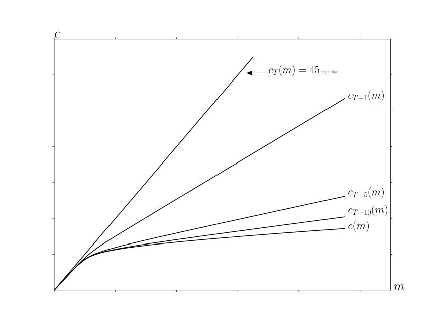
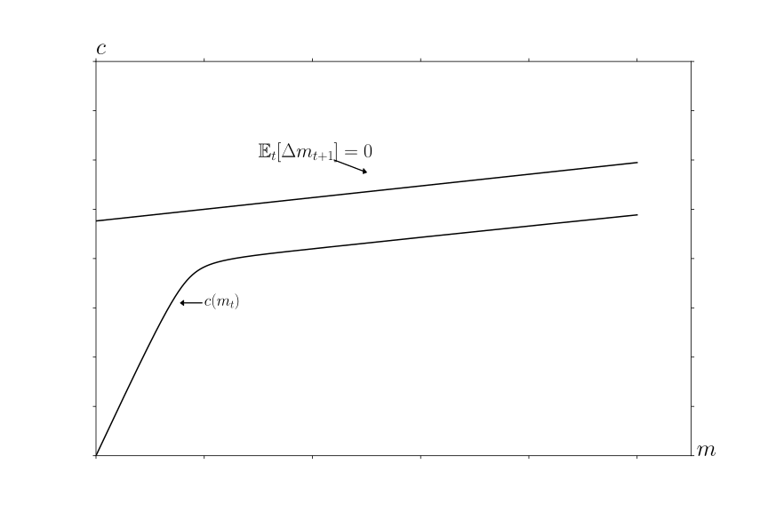
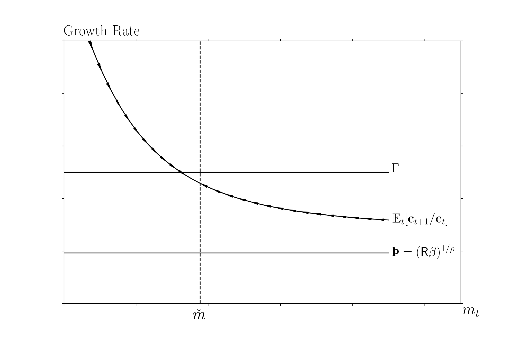
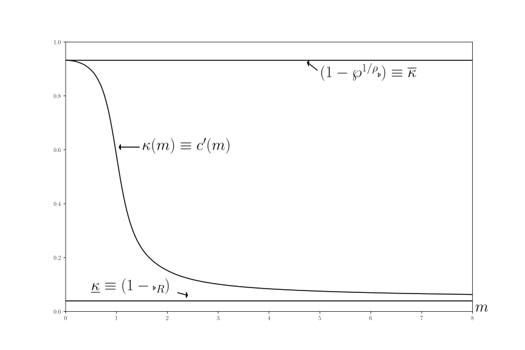

Abstract This paper builds theoretical foundations for rigorous and intuitive understanding of ‘bufferstock’ saving models, pairing each theoretical result with a quantitative illustration. Afterdescribing conditions under which a consumption function exists, the paper shows that a‘target’ buffer stock exists only under strictly stronger conditions. Under these ‘bufferstock’ conditions, the average growth rate of microeconomic consumers’ spending matchesthe average growth rate of their permanent income; conditions required for aggregate‘balanced growth’ can be looser. Together, the (provided) numerical tools and (proven)analytical results constitute a comprehensive toolkit for understanding buffer stock models.
 KeywordsÂ
Precautionary saving, buffer stock saving, marginal propensity
to consume, permanent income hypothesis, income fluctuation
problem
The dashboardwill launch a live interactive Jupyter Notebookthat uses the Econ-ARK/HARKtoolkit to produce all of the paper’s ï¬gures (warning: the dashboard may take several minutes tolaunch).
All ï¬gures and numerical results can be automatically reproducedusing the Econ-ARK/HARKtoolkit, which can be cited per our references (Carroll,Kaufman, Kazil, Palmer, and White (2018)); for reference to the toolkit itself see Acknowleding Econ-ARK. Thanks to the Consumer FinancialProtection Bureaufor funding the original creation of the Econ-ARKtoolkit; and to the Sloan Foundationfor funding Econ-ARK’s extensive furtherdevelopmentthat brought it to the point where it could be used for this project. The toolkit can be cited with its digital objectidentiï¬er, 10.5281/zenodo.1001067, as is done in the paper’s own references as Carroll, Kaufman, Kazil, Palmer, and White (2018).Thanks to James Feigenbaum, Joseph Kaboski, Miles Kimball, Qingyin Ma, Misuzu Otsuka, Damiano Sandri, John Stachurski, AdamSzeidl, Alexis Akira Toda, Metin Uyanik, Mateo Velásquez-Giraldo, Weifeng Wu, Jiaxiong Yao, and Xudong Zheng for commentson earlier versions of this paper, John Boyd for help in applying his weighted contraction mapping theorem, Ryoji Hiraguchi forextraordinary mathematical insight that improved the paper greatly, David Zervos for early guidance to the literature, and participants ina seminar at Johns Hopkins University and a presentation at the 2009 meetings of the Society of Economic Dynamics for theirinsights.
1 Introduction
In the presence of empirically realistic transitory and permanent shocks to income a laFriedman (1957), only one more ingredient is required to construct a testable model of optimal
consumption: A description of preferences. Modelers usually assume geometric discounting of a
constant relative risk aversion utility function, because, starting with Zeldes (1989), a large
literature has constructed numerical solutions whose quantitative predictions match microeconomic
evidence reasonably well; results are similar whether or not liquidity constraints are
imposed.1
A companion theoretical literature has derived analytical properties of limiting “true”
(nonnumerical) mathematical solutions – but only for models more complex than the
case with just shocks and utility. The extra complexity has been required because
standard contraction mapping theorems (beginning with Bellman (1957) and including
those building on Stokey et. al. (1989)) cannot be applied when the utility function
and resources are both unbounded (see the fuller discussion at the end of section
2.1).
This paper’s ï¬rst technical contribution is to articulate the (loose) conditions under which
the simple problem (without shortcuts like a consumption floor or liquidity constraints)
defines a contraction mapping with a nondegenerate consumption function. The interesting
requirement is a ‘Finite Value of Autarky’ condition. The paper’s second theoretical
contribution is to specify the conditions under which the resulting consumption function
implies existence of a ‘target’ wealth-to-permanent-income ratio (the model exhibits ‘buffer
stock’ saving behavior). Buffer stock saving arises when the model’s parameters satisfy a
“Growth Impatience Condition†that relates preferences and uncertainty to predictable income
growth.
Even without a formal proof, target saving has been intuitively understood to
underlie central quantitative results from the heterogeneous agent macroeconomics
literature; for example, the logic of target saving is central to the explanation by
Krueger, Mitman, and Perri (2016) of the fact that, during the Great Recession,
middle-class consumers cut their consumption more than the poor or the rich. The theory
below explains why: Learning that the future has become more uncertain does not
change the urgent imperatives of the poor (their high means they have little
room to maneuver). And, increased labor income uncertainty does not change the
behavior of the rich because it poses little risk to their consumption. Only people in the
middle have both the motivation and the wiggle-room to reduce their discretionary
spending.
Conveniently, elements required for the convergence proof also provide analytical
foundations for many other results familiar from the numerical literature. Analytical
derivations of these results are provided along the way to the proofs, paired with numerically
computed illustrations (made using the open-source Econ-ARK toolkit). The main insights of
the paper are instantiated in the toolkit, whose buffer stock saving module flags parametric
choices under which a problem fails to define a contraction mapping; a target level of wealth
does not exist; or the solution is otherwise surprising.
The paper proceeds in three parts.
The ï¬rst part articulates the conditions required for the problem to deï¬ne a nondegenerate
limiting consumption function, and explains how the model relates to those previously
considered in the literature. The conditions required for convergence are interestingly parallel
to those required for the liquidity constrained perfect foresight model; that parallel is explored
and explained. Next, the paper derives limiting properties of the consumption function as
resources approach infinity, and as they approach their lower bound; then the theorem is
proven explaining when the problem defines a contraction mapping. Finally, a related class of
commonly-used models (exempliï¬ed by Deaton (1991)) is shown to constitute a particular
limit of this paper’s model.
The next section examines ï¬ve key properties of the model. First, as cash approaches
inï¬nity the expected growth rate of consumption and the marginal propensity to consume
(MPC) converge to their values in the perfect foresight case. Second, as cash approaches zero
the expected growth rate of consumption approaches infinity, and the MPC approaches a
simple analytical limit. Third, a theorem explains why, if the consumer is ‘growth impatient,’ a
unique target cash-to-permanent-income ratio will exist. Fourth, at the target cash ratio, the
expected growth rate of consumption is slightly less than the expected growth rate of
permanent (noncapital) income. Finally, the expected growth rate of consumption is
declining in the level of cash. The ï¬rst four propositions are proven under general
assumptions about parameter values; the last is shown to hold if there are no transitory
shocks, but may fail in extreme cases if there are both transitory and permanent
shocks.
We are interested in the inï¬nite-horizon solution, which we deï¬ne as the limit of the
solution to a sequence of finite-horizon problems as the horizon becomes arbitrarily
large. For expositional purposes, it will be useful to ï¬x a terminal date and
consider the problem of a consumer who begins life in period , then the problem
of a consumer who begins life in , and so on. Informally, we will say that
the problem has a ‘nondegenerate’ infinite horizon solution if there is a limiting
consumption function which is neither zero everywhere nor inï¬nity
everywhere.
Speciï¬cally, a consumer born periods before date solves the problem
where
(1)
is a constant relative risk aversion utility function with
.2
The consumer’s initial condition is deï¬ned by market resources (Deaton (1991)’s
‘cash-on-hand’) and permanent noncapital income , which both start out strictly positive,
, and the consumer cannot die in debt,
(2)
In the usual treatment, a dynamic budget constraint (DBC) incorporates several elements
that determine next period’s (given this period’s choices); for the detailed analysis here, it
will be useful to disarticulate the steps so that individual ingredients can be separately
examined:
(3)
where indicates the consumer’s assets at the end of period , which grow
by a ï¬xed interest factor between periods, so that is the
consumer’s financial (‘bank’) balances before next period’s consumption
choice;3 (‘market resources’) is the sum of ï¬nancial wealth and noncapital income
(permanent noncapital income multiplied by a mean-one iid transitory income shock
factor ; transitory shocks are assumed to satisfy ). Permanent
noncapital income in is equal to its previous value, multiplied by a growth factor ,
modiï¬ed by a mean-one iid shock , satisfying for
(and is the degenerate case with no permanent
shocks).4
Following Zeldes (1989), in future periods there is a small probability
that income will be zero (a ‘zero-income event’),
(4)
where is an iid mean-one random variable () whose distribution satisï¬es where
.5
Call the cumulative distribution functions and (where is derived trivially from
(4) and ).
The model looks more special than it is. In particular, the assumption of a positive
probability of zero-income events may seem objectionable (though it has empirical
support).6
However, it is easy to show that a model with a nonzero minimum value of (motivated,
for example, by the existence of unemployment insurance) can be redefined by
capitalizing the present discounted value of minimum income into current market
assets,7
transforming that model back into this one. And no key results would change if the transitory
shocks were persistent but mean-reverting, instead of IID.
This model differs from Bewley’s (1977) classic formulation in several ways. The CRRA
utility function does not satisfy Bewley’s assumption that is well deï¬ned, or that
is well defined and finite; indeed, neither the value function nor the marginal value function
will be bounded. It differs from Schectman and Escudero (1977) in that they impose
liquidity constraints and positive minimum income. It differs from both of these
in that it permits permanent growth in income, and also permanent shocks to
income, which a large empirical literature finds are quantitatively important in micro
data8
and which since Friedman (1957) have been understood to be far more consequential for
household welfare than are transitory fluctuations. It differs from Deaton (1991) because
liquidity constraints are absent; there are separate transitory and permanent shocks (a laMuth (1960)); and the transitory shocks here can occasionally cause income to reach
zero.9
It differs from models found in Stokey et. al. (1989) because neither
liquidity constraints nor bounds on utility or marginal utility are
imposed.1011Li and Stachurski (2014) show how to allow unbounded returns by using policy function
iteration, but also impose constraints.
The paper with the most in common with this one is Ma, Stachurski, and Toda (2020),
henceforth MST, who establish the existence and uniqueness of a solution to a general
income fluctuation problem in a Markovian setting. The most important differences
are that MST impose liquidity constraints, assume that , and assume
that for every possible realization of income , expected marginal utility is ï¬nite
(. These assumptions are not consistent with the CRRA utility function
and income processes used here, whose properties are key to the derivation of the
results.12
2.2 The Problem Can Be Rewritten in Ratio Form
We establish a bit more notation by reviewing the standard result that in problems of this
class (CRRA utility, permanent shocks) the number of relevant state variables can be reduced
from two ( and ) to one . Generically deï¬ning nonbold variables as
the boldface counterpart normalized by (as with ), assume that value in
the last period of life is , and consider the problem in the second-to-last
period,
(5)
where the last line follows because for the CRRA utility function (1), .
Now, in a one-time deviation from the notational convention established in the last
paragraph, deï¬ne nonbold ‘normalized value’ not as but as , because this
allows us to exploit features of the related problem,
(6)
where is a ‘growth-normalized’ return factor, and the new problem’s ï¬rst order
condition is13
This logic induces to all earlier periods, so that if we solve the normalized one-state-variable
problem (6), we will have solutions to the original problem for any from:
2.3 Deï¬nition of a Nondegenerate Solution
Formally, we say the problem has a nondegenerate solution if as the horizon gets
arbitrarily large the solution in the ï¬rst period of life deï¬nes a unique
:
(8)
that satisfies
(9)
for every (‘Degenerate’ limits will be cases where the limiting consumption
function is or .)
2.4 Perfect Foresight Benchmarks
The familiar analytical solution to the perfect foresight model, obtained by setting
and , allows us to deï¬ne some remaining notation and
terminology.
2.4.1 Human Wealth
The dynamic budget constraint, strictly positive marginal utility, and the can’t-die-in-debt
condition (2) imply an exactly-holding intertemporal budget constraint (IBC):
(10)
where is nonhuman wealth and is ‘human wealth,’ and with a constant
,
(11)
This equation shows that in order for to be ï¬nite, we must impose the
Finite Human Wealth Condition (‘FHWC’):
(12)
Intuitively, for human wealth to be finite, the growth rate of (noncapital) income must be
smaller than the interest rate at which that income is being discounted.
2.4.2 PF Unconstrained Solution Exists Under RIC and FHWC
The consumption Euler equation holds in every period; with ,
(13)
where the Old English letter ‘thorn’ represents what we will call the ‘Absolute Patience Factor,’ or
APF:14 Â
(14)
The sense in which captures patience is that if the ‘absolute impatience condition’ (AIC)
holds,
(15)
the consumer will choose to spend an amount too large to sustain indefinitely (the level of
consumption must fall over time). We call such a consumer ‘absolutely impatient.’
We next deï¬ne a ‘Return Patience Factor’ (RPF) that relates absolute patience to the
return factor:
(16)
and since consumption is growing by but discounted by :
which defines a normalized finite-horizon perfect foresight consumption function
(19)
where is the marginal propensity to consume (MPC) because it answers the question ‘if
the consumer had an extra unit of wealth, how much more would be spent.’ (’s overbar
signfies that this function will be an upper bound as we modify the problem to incorporate
constraints and uncertainty; analogously, the underbar for indicates that is a lower
bound).
Equation (18) makes plain that for the limiting MPC to be strictly positive
as goes to inï¬nity we must impose the Return Impatience Condition
(RIC):
(20)
so that
(21)
The RIC thus imposes a second kind of ‘impatience:’ The consumer cannot be so
pathologically patient as to wish, in the limit as the horizon approaches infinity, to spend
nothing today out of an increase in current wealth. That is, the RIC rules out the degenerate
limiting solution . We will say that a consumer who satisï¬es the RIC is ‘return
impatient.’
Given that the RIC holds, and as before deï¬ning limiting objects by the absence of a time
subscript (e.g., ), the limiting consumption function will
be
(22)
and we now see that in order to rule out the degenerate limiting solution we
need to be ï¬nite; that is, we must impose the ï¬nite human wealth condition
(12).
Finally, since the perfect foresight growth factor for consumption is , the fact that
allows us to write an analytical expression for value:
(23)
which asymptotes to a ï¬nite number as approaches if
15
with a bit of algebra, this requirement can be shown to be equivalent to the RIC. Thus, the
same conditions that guarantee a nondegenerate limiting consumption function also guarantee
a nondegenerate limiting value function (which, interestingly, will not be true when we
incorporate uncertainty).
Conclusions so far are summarized in the ï¬rst panel of Table 4: The PF-Unconstrained
model will have a nondegenerate solution if we impose the RIC and FHWC.
2.4.3 PF Constrained Solution Exists Under RIC or Under {,PF-GIC}
If a liquidity constraint requiring is ever to be relevant, it must be relevant at the
lowest possible level of market resources, , which obtains for a consumer who enters
period with . The constraint is ‘relevant’ if it prevents the choice that would
otherwise be optimal; at the constraint is relevant if the marginal utility from
spending all of today’s resources , exceeds the marginal utility from doing the
same thing next period, ; that is, if such choices would violate the Euler equation
(7):
(24)
By analogy to the return patience factor, we therefore deï¬ne a ‘perfect foresight growth
patience factor’ (PF-GPF) as
(25)
and define a ‘perfect foresight growth impatience condition’ (PF-GIC)
(26)
which is equivalent to (24) (exponentiate both sides by ).
andRIC. If the PF-GIC fails but the RICÂ (20) holds, appendix A shows that, for
some , an unconstrained consumer behaving according to (22) would choose
for all . In this case the solution to the constrained consumer’s problem is simple:
For any the constraint does not bind (and will never bind in the future) so here the
constrained consumption function is identical to the unconstrained one. If the consumer were
somehow16
to arrive at an the constraint would bind and the consumer would consume
. Using the accent to designate version of a function in the presence of
constraints:
(27)
PF-GICandRIC. More useful is the case where the return impatience and PF
growth-impatience conditions both hold. In this case appendix A shows that the limiting
constrained consumption function is piecewise linear, with up to a ï¬rst ‘kink
point’ at , and with discrete declines in the MPC at a set of kink points
. As the constrained consumption function becomes arbitrarily
close to the unconstrained , and the marginal propensity to consume function
limits to . Similarly, the value function is nondegenerate and limits
into the value function of the unconstrained consumer. This logic holds even when the finite
human wealth condition fails (): A solution exists because the constraint prevents the
consumer from borrowing against infinite human wealth to finance infinite current
consumption. Under these circumstances, the consumer who starts with any amount of
resources will, over time, run those resources down so that by some ï¬nite number of
periods in the future the consumer will reach , and thereafter will set
for eternity, a policy that will (using the same steps as for equation (23)) yield value of
which will be ï¬nite whenever any of these equivalent conditions holds:
(28)
where we call 17
the ‘Perfect Foresight Finite Value Of Autarky Factor’ (PF-FVAF), and (28) is the Perfect
Foresight Finite Value of Autarky Condition, PF-FVAC, because it guarantees that a
consumer who always spends all permanent income ‘has finite autarky value.’ Note that the
last version of the PF-FVACÂ in (28) implies the PF-GICÂ whenever
() holds. So, if , value for any ï¬nite will be the sum of two ï¬nite numbers:
The component due to the unconstrained consumption choice made over the finite horizon
leading up to , and the ï¬nite component due to the value of consuming all
thereafter.
PF-GICand. The most peculiar possibility occurs when the RICÂ fails. Under these
circumstances the FHWC must also fail (Appendix A), and the constrained consumption
function is nondegenerate. (See appendix Figure 8 for a numerical example). While it is true
that , nevertheless the limiting constrained consumption function is
strictly positive and strictly increasing in . This result interestingly reconciles the
conflicting intuitions from the unconstrained case, where would suggest a
degenerate limit of while would suggest a degenerate limit of
.
Tables 3 and 4 (and appendix table 5) codify these points. Perhaps more useful is the
intuitive representation of the relations of the conditions for the unconstrained perfect
foresight case presented in Figure 1. Each node represents a quantity considered in the
foregoing analysis. The arrow associated with each inequality condition reflects the imposition
of that condition. For example, one way we wrote the PF-FVAC in equation (28) is
, so imposition of the PF-FVAC is captured by the diagonal arrow
connecting and . Traversing the diagram clockwise starting at
involves imposing first the PF-GIC then the FHWC, and the consequent arrival at the
bottom right node tells us that these two conditions jointly imply that the PF-FVAC
holds. Reversal of a condition will reverse the arrow’s direction; so, for example,
the bottommost arrow going from to imposes ; but we
can cancel the cancellation and reverse the arrow. This would allow us to traverse
the diagram in a clockwise direction from to , revealing that imposition of
PF-GIC and FHWC (and, redundantly, FHWC again) lets us conclude that the RIC
holds because the starting point is and the endpoint is , and this is a chain
of inequalities. (Consult Appendix J for a detailed exposition of diagrams of this
type).
Figure 1:Relation of PF-GIC, FHWC, RIC, and PF-FVAC
An arrowhead points to the larger of the two quantities being compared. For example, the diagonal arrowindicates that, which is one way of writing thePF-FVAC, equation(28)
We now turn to the case with uncertainty. The model without constraints but with
uncertainty will turn out to be a close parallel to the model with constraints but without
uncertainty.
2.5 Uncertainty-Modiï¬ed Conditions
2.5.1 Impatience
When uncertainty is introduced, the expectation of can be rewritten as:
(29)
where Jensen’s inequality guarantees that the expectation of the inverse of the permanent
shock is strictly greater than one. It will be convenient to deï¬ne the object
because this permits us to write expressions like the RHS of (29) compactly as, e.g.,
18
We refer to this as the ‘compensated return,’ because it compensates (in a risk-neutral way)
for the effect of uncertainty on the expected growth-normalized return (in the sense implicitly
deï¬ned in (29)).
We can now transparently generalize the PF-GIC (26) by deï¬ning a ‘compensated growth
factor’
(30)
and a compensated Growth Patience Pactor (GPF):
(31)
and a straightforward derivation ((45) below) yields the conclusion that
which implies that if we wish to prevent from heading to inï¬nity (that is, if we want
to be expected to fall for some large enough value of ) we must impose a generalized version of
the Perfect Foresight Growth Impatience Condition (26); we call the ‘Growth Impatience
Condition’ (GIC) the requirement that the Growth Patience Factor (31) must be less than
1:19
(32)
which is stronger than the perfect foresight version (26) because
(33)
(Jensen’s inequality implies that for nondegenerate ).
2.5.2 Autarky Value
Analogously to (23), a consumer who spent exactly their permanent income every period
would have value determined by the product of the expectation of the (independent) future
shocks to permanent income:
which invites the deï¬nition of a utility-compensated equivalent of the permanent
shock,
which will satisfy for and nondegenerate (and for the reasonable
(though not required) case of ); deï¬ning
(34)
we can see that will be ï¬nite as approaches if
(35)
which we call the ‘ï¬nite value of autarky’ condition (FVAC) because it guarantees
that value is finite for a consumer who always consumes their (now stochastic)
permanent income (and we will call the ‘Finite Value of Autarky Factor,’
FVAF).20
For nondegenerate , this condition is stronger (harder to satisfy in the
sense of requiring lower ) than the perfect foresight version (28) because
.21
2.6 The Baseline Numerical Solution
Figure 2, familiar from the literature, depicts the successive consumption rules that apply in
the last period of life , the second-to-last period, and earlier periods under baseline
parameter values listed in Table 2. (The 45 degree line is because in the last
period of life it is optimal to spend all remaining resources.)
Table 1:Microeconomic Model Calibration
Table 2:Model Characteristics Calculated from Parameters

Figure 2:Convergence of the Consumption Rules
In the ï¬gure, the consumption rules appear to converge to a nondegenerate . Our next
purpose is to show that this appearance is not deceptive.
2.7 Concave Consumption Function Characteristics
A precondition for the main proof is that the maximization problem (6)
defines a sequence of continuously differentiable strictly increasing strictly
concave22
functions . The straightforward but tedious proof is relegated to appendix B.
For present purposes, the most important point is that the income process induces what
Aiyagari (1994) dubbed a ‘natural borrowing constraint’: for all periods
because a consumer who spent all available resources would arrive in period with
balances of zero, and then might earn zero income over the remaining horizon, requiring
the consumer to spend zero, incurring negative infinite utility. To avoid this disaster, the
consumer never spends everything. Zeldes (1989) seems to have been the ï¬rst to argue, based
on his numerical results, that the natural borrowing constraint was a quantitatively
plausible alternative to ‘artificial’ or ‘ad hoc’ borrowing constraints in a life cycle
model.23
Strict concavity and continuous differentiability of the consumption function are key
elements in many of the arguments below, but are not characteristics of models with ‘artificial’
borrowing constraints. The analytical convenience of these features is considerable, even if
models with natural borrowing constraints in practice usually give similar results to those with
artificial constraints.
2.8 Bounds for the Consumption Functions
The consumption functions depicted in Figure 2 appear to have limiting slopes
as and as . This section conï¬rms that impression and derives
those slopes, which also turn out to be useful in the contraction mapping
proof.24
Assume that a continuously differentiable concave consumption function exists in period
, with an origin at , a minimal MPC , and maximal MPC
. (If these will be ; for earlier periods they will exist by
recursion from the following arguments.)
The MPC bound as wealth approaches inï¬nity is easy to understand: In this case, under our
imposed assumption that human wealth is finite, the proportion of consumption
that will be financed out of human wealth approaches zero. In consequence, the
proportional difference between the solution to the model with uncertainty and the perfect
foresight model shrinks to zero. In the course of proving this, appendix F provides
a useful recursive expression (used below) for the (inverse of the) limiting MPC:
(36)
2.8.1 Weak RIC Conditions
There is a parallel expression for the limiting maximal MPC as : appendix equation
(95) shows that, as ,
(37)
where is a decreasing convergent sequence if the ‘weak return patience factor’
satisï¬es:
(38)
a condition that we dub the ‘Weak Return Impatience Condition’ (WRIC) because
with it will hold more easily (for a larger set of parameter values) than the
RICÂ ().
The essence of the argument is that as wealth approaches zero, the overriding
consideration that limits consumption is the (recursive) fear of the zero-income
events. (That is why the probability of the zero income event appears in the
expression.)
We are now in position to observe that the optimal consumption function must
satisfy
(39)
because consumption starts at zero and is continuously differentiable (as argued above), is
strictly concave (Carroll and Kimball (1996)), and always exhibits a slope between and
(the formal proof is provided in appendix D).
2.9 Conditions Under Which the Problem Deï¬nes a Contraction Mapping
To prove that the consumption rules converge, we need to show that the problem deï¬nes a
contraction mapping. As mentioned above, this cannot be proven using the standard theorems
in the literature following Stokey et. al. (1989), which require marginal utility to be bounded
over the space of possible values of , because the possibility (however unlikely) of an
unbroken string of zero-income events through the end of the horizon means that marginal
utility is unbounded. Although a recent literature examines the existence and uniqueness of
solutions to Bellman equations in the presence of ‘unbounded returns’ (see, e.g., Matkowski
and Nowak (2011)), the techniques in that literature cannot be used to solve the problem here
because the required conditions are violated by a problem that incorporates permanent
shocks.25
Fortunately, Boyd (1990) provided a weighted contraction mapping theorem that Alvarez
and Stokey (1998) showed could be used to address the homogeneous case (of which CRRA is
an example) in a deterministic framework; later, Durán (2003) showed how to extend the
Boyd (1990) approach to the stochastic case.
Deï¬nition 1.Consider any functionwhereis the space of continuousfunctions fromto. Supposewithand. Thenis-bounded if the-norm of,
(40)
is ï¬nite.
For deï¬ned as the set of functions in that are -bounded; ,
, , and as examples of -bounded functions; and using to
indicate the function that returns zero for any argument, Boyd (1990) proves the
following.
We can show that our operator satisï¬es the conditions that Boyd requires of his
operator , if we impose two restrictions on parameter values. The ï¬rst is the
WRICÂ necessary for convergence of the maximal MPC, equation (38) above. A more serious
restriction is the utility-compensated Finite Value of Autarky condition, equation (35).
(We discuss the interpretation of these restrictions in detail in section 2.11 below.)
Imposing these restrictions, we are now in position to state the central theorem of the
paper.
Theorem 1.is a contraction mapping if the restrictions on parameter values (38)
and (35) are true (that is, if the weak return impatience condition and the ï¬nite valueof autarky condition hold).
Intuitively, Boyd’s theorem shows that if you can ï¬nd a that is everywhere ï¬nite but
goes to inï¬nity ‘as fast or faster’ than the function you are normalizing with , the
normalized problem defines a contraction mapping. The intuition for the FVAC condition is
just that, with an inï¬nite horizon, with any initial amount of bank balances , in the
limit your value can always be made greater than you would get by consuming
exactly the sustainable amount (say, by consuming for some small
).
The details of the proof are cumbersome, and are therefore relegated to appendix D. Given
that the value function converges, appendix D.3 shows that the consumption functions
converge.29
2.10 The Liquidity Constrained Solution as a Limit
This section explains why a related problem commonly considered in the literature (e.g., with
a simpler income process, by Deaton (1991)), with a liquidity constraint and a positive
minimum value of income, is the limit of the problem considered here as the probability of
the zero-income event approaches zero.
The essence of the argument is easy to state. As noted above, the possibility of earning zero
income over the remainder of the horizon prevents the consumer from ending the current
period with zero assets because with some finite probability the consumer would be forced to
consume zero, which would be infinitely painful.
But the extent to which the consumer feels the need to make this precautionary provision
depends on the probability that it will turn out to matter. As , that probability
becomes arbitrarily small, so the amount of precautionary saving approaches zero. But zero
precautionary saving is the amount of saving that an impatient liquidity constrained consumer
with perfect foresight would choose.
Another way to understand this is just to think of the liquidity constraint as being imposed
by specifying a component of the utility function that is zero whenever the consumer ends the
period with (strictly) positive assets, but negative infinity if the consumer ends the period
with (weakly) negative assets.
See appendix G for the formal proof justifying the foregoing intuitive discussion.
2.11 Discussion of Parametric Restrictions
The full relationship among all the conditions articulated above is represented in
Figure 3. Though the diagram looks complex, it is merely a modiï¬ed version of
the earlier diagram with further (mostly intermediate) inequalities inserted. Again
readers unfamiliar with such diagrams should see Appendix J) for a more detailed
explanation.
Figure 3:Relation of All Inequality Conditions
See Table 2 for Numerical Values of Nodes Under Baseline Parameters
2.11.1 Discussion of the RIC
In the perfect foresight unconstrained problem (section 2.4.2), the RIC was required
for existence of a nondegenerate solution. It is surprising, therefore, that in the
presence of uncertainty, the RIC is neither necessary nor sufficient for a nondegenerate
solution.
We thus begin our discussion by asking what features the problem must exhibit (given the
FVAC) if the RICÂ fails (that is, :
(42)
but since and (because we have assumed ), this inequality
can hold only if ; that is, given the FVAC, the RICÂ can fail only if human wealth is
unbounded. Unbounded human wealth is permitted here, as in the perfect foresight
liquidity constrained problem. But, from equation (36), an implication of is that
. Thus, interestingly, the presence of uncertainty both permits unlimited
human wealth and at the same time prevents that unlimited wealth from resulting in infinite
consumption. That is, in the presence of uncertainty, pathological patience (which in the
perfect foresight model with finite wealth results in consumption of zero) plus infinite human
wealth (which the perfect foresight model prohibits by assumption because it leads to
infinite consumption) combine to yield a unique finite MPC for any finite value of
.30
Note the close parallel to the conclusion in the perfect foresight liquidity constrained model
in the {PF-GIC,} case (for detailed analysis of this case see appendix A).
There, too, the tension between infinite human wealth and pathological patience
was resolved with a nondegenerate consumption function whose limiting MPC was
zero.
2.11.2 The WRIC
The ‘weakness’ of the additional requirement for contraction, the weak RIC, can be seen by
asking ‘under what circumstances would the FVAC hold but the WRIC fail?’ Algebraically,
the requirement is
(43)
If there were no conceivable parameter values that could satisfy both of these
inequalities, the WRICÂ would have no force. And if we require , the WRICÂ is
indeed redundant because now , so that the RICÂ (and WRIC) must
hold.
But neither theory nor evidence demands that we assume . We can therefore
approach the question of the WRIC’s relevance by asking just how low must be for the
condition to be relevant. Suppose for illustration that , ,
and . In that case (43) reduces to
but since by assumption, the binding requirement is that
so that for example if we would need (that is, a perpetual riskfree
rate of return of worse than -90 percent a year) in order for the WRICÂ to bind. The relevance
of the WRIC is indeed “Weak.”
Perhaps the best way of thinking about this is to note that the space of parameter
values for which the WRICÂ is relevant shrinks out of existence as , which
section 2.10 showed was the precise limiting condition under which behavior becomes
arbitrarily close to the liquidity constrained solution (in the absence of other risks). On
the other hand, when , the consumer has no noncapital income (so that
the FHWCÂ holds) and with the WRICÂ is identical to the RIC; but the
RICÂ is the only condition required for a solution to exist for a perfect foresight
consumer with no noncapital income. Thus the WRIC forms a sort of ‘bridge’ between
the liquidity constrained and the unconstrained problems as moves from 0 to
1.
2.11.3 When the GICÂ Fails
If both the GICÂ and the RICÂ hold, the arguments above establish that as
the limiting consumption function asymptotes to the consumption function for the
perfect foresight unconstrained function. The more interesting case is where the
GICÂ fails.
A solution that satisï¬es the combination FVAC and is depicted in Figure 4. The
consumption function is shown along with the locus that identiï¬es the
‘sustainable’ level of spending at which is expected to remain unchanged. The diagram
suggests a fact that is confirmed by deeper analysis: Under the depicted configuration of
parameter values (see the code for details), the consumption function never reaches the
locus; indeed, when the RICÂ holds but the GICÂ does not, the consumption
function’s limiting slope is shallower than that of the sustainable consumption locus
,31
so the gap between the two actually increases with in the limit. Although a
nondegenerate consumption function exists, a target level of does not (or, rather,
the target is ), because no matter how wealthy a consumer becomes, the
consumer will always spend less than the amount that would keep stable (in
expectation).

Figure 4:Example Solution when FVAC Holds but GIC Does Not
We have now established the points of comparison promised above between the perfect
foresight solutions and the solutions under uncertainty; these are codified in the remaining
parts of Tables 3 and 4.
Table 3:Deï¬nitions and Comparisons of Conditions
Table 4:Sufficient Conditions for Nondegenerate Solution
For feasiblesatisfying, a nondegenerate limiting consumption function deï¬nes the uniquevalue ofsatisfying; a nondegenerate limiting value function deï¬nes a correspondingunique value of.RIC,FHWC are necessary as well as sufficient.That is, theï¬rst kink point iniss.t. forthe constraint will bind now, while fortheconstraint will bind one period in the future. The second kink point corresponds to thewhere theconstraint will bind two periods in the future, etc.
3 Analysis of the Converged Consumption Function
Figures 5 and 6a,b capture the main properties of the converged consumption rule when the RIC, GIC, and
FHWCÂ all hold.32
Figure 5 shows the expected consumption growth factor for a consumer
behaving according to the converged consumption rule, while Figures 6a,b illustrate
theoretical bounds for the consumption function and the marginal propensity to
consume.
Five features of behavior are captured, or suggested, by the ï¬gures. First, as the
expected consumption growth factor goes to , indicated by the lower bound in Figure 5,
and the marginal propensity to consume approaches (Figure 6), the same as
the perfect foresight MPC. Second, as the consumption growth factor approaches
(Figure 5) and the MPC approaches (Figure 6). Third (Figure 5), there is
a target cash-on-hand-to-income ratio such that if then , and (as
indicated by the arrows of motion on the curve), the model’s dynamics are
‘stable’ around the target in the sense that if then cash-on-hand will rise (in
expectation), while if , it will fall (in expectation). Fourth (Figure 5), at the
target , the expected rate of growth of consumption is slightly less than the
expected growth rate of permanent noncapital income. The final proposition suggested
by Figure 5 is that the expected consumption growth factor is declining in the
level of the cash-on-hand ratio . This turns out to be true in the absence of
permanent shocks, but in extreme cases it can be false if permanent shocks are
present.33

Figure 5:Target , Expected Consumption Growth, and Permanent Income Growth
3.1 Limits as approaches Inï¬nity
Deï¬ne
which is the solution to an inï¬nite-horizon problem with no noncapital income ();
clearly , since allowing the possibility of future noncapital income cannot reduce current
consumption.34
Assuming the FHWC holds, the inï¬nite horizon perfect foresight solution (22) constitutes
an upper bound on consumption in the presence of uncertainty, since Carroll and
Kimball (1996) show that the introduction of uncertainty strictly decreases the level of
consumption at any .
Thus, we can write
(44)
But
so as , and the continuous differentiability and strict concavity of
therefore implies
because any other fixed limit would eventually lead to a level of consumption either exceeding
or lower than .
Figure 6 conï¬rms these limits visually. The top plot shows the converged consumption
function along with its upper and lower bounds, while the lower plot shows the marginal
propensity to consume.

Figure 6:Limiting MPC’s
(a)Bounds
(b)Target
Figure 7:The Consumption Function
Next we establish the limit of the expected consumption growth factor as :
But
and
while (for convenience deï¬ning ),
(45)
because 35
and which goes to zero as goes to inï¬nity.
Hence we have
so as cash goes to inï¬nity, consumption growth approaches its value in the perfect
foresight model.
3.2 Limits as Approaches Zero
Now consider the limits of behavior as gets arbitrarily small.
Now using the continuous differentiability of the consumption function along with
L’Hôpital’s rule, we have
Figure 6 conï¬rms that the numerical solution method obtains this limit for the MPC as
approaches zero.
For consumption growth, as we have
where the second-to-last line follows because is
positive, and the last line follows because the minimum possible realization of
is so the minimum possible value of expected next-period consumption is
positive.
3.3 There Exists Exactly One Target Cash-on-Hand Ratio, which is Stable
We now prove the existence of a target cash-on-hand-to-income ratio towards which an
agent’s is expected to move. (The accent invokes the fact that this is the value that
other ’s ‘point to.’)
Theorem 2.For the problem deï¬ned in section 2.1, if the (32), and (38)
hold, there exists a unique cash-on-hand-to-income ratiosuch that
(46)
Moreover,is stable in the sense that
(47)
The elements of the proof are:
Existence and continuity of
Existence of a point where
is monotonically decreasing
3.3.1 Existence and Continuity of .
The consumption function exists because we have imposed the conditions (the and
) that theorem 1 establishes are sufficient for its existence. (Indeed, Appendix C
shows that is not just continuous, but twice continuously differentiable.)
Section 2.7 shows that for all , . Since , even if
takes on its minimum value of 0, , since both and are strictly
positive under our foregoing assumptions. With , the ratio inherits
continuity (and, for that matter, continuous differentiability) from the consumption
function.
3.3.2 Existence of a point where .
The logic in section 3.2 showing that transparently implies the same
proposition for : so the ratio is unbounded.
The limit as goes to inï¬nity is
(48)
where the last two lines are merely a restatement of the GICÂ (32).
The Intermediate Value Theorem tells us that if is continuous, and takes on
values above and below 1, there must be at least one point at which it is equal to
one.
3.3.3 is monotonically decreasing.
Now deï¬ne and note that
(49)
so that . Our goal is to prove that is strictly decreasing on using the
fact that
(50)
Note that the statement of theorem 2 did not require the RIC to hold. Now, we show that
(given our other assumptions) is decreasing (but for different reasons) whether the
RIC holds or fails ().
IfRICholds. Equation (21) indicates that if the RIC holds, then . We show
at the bottom of Section 2.8.1 that if the RIC holds then so
that
which is negative because the GIC says .
IfRICfails. Under , recall that . Concavity of the consumption
function means that is a decreasing function, so everywhere
which means that from (50) is guaranteed to be negative if
(51)
But the combination of the GIC holding and the RIC failing can be written:
The foregoing arguments rely on the continuous differentiability of , so they do not
directly go through for a problem in which the existence of liquidity constraints can lead to
discrete changes in the slope at particular values of . But we can use
the fact that the constrained model is the limit of the baseline model as
to conclude that there is likely a unique target cash level even in the constrained
model.
If consumers are sufficiently impatient, the limiting target level in the constrained model
will be . That is, if a consumer starting with will save nothing,
, then the target level of in the constrained model will be 1; if a consumer with
would choose to save something, then the target level of will be greater than the
expected level of income.
3.4 Expected Consumption Growth at Target Is Less than Expected Permanent
Income Growth
In Figure 5 the intersection of the target cash-on-hand ratio locus at with the
expected consumption growth curve lies below the intersection with the horizontal line
representing the growth rate of expected permanent income. This can be proven as
follows.
Strict concavity of the consumption function implies that if
then
(52)
and since and it is clear that cov
which implies that the entire term added to in (52) is negative, as required.
3.5 Is Expected Consumption Growth Is a Declining Function of ?
Figure 5 depicts the expected consumption growth factor as a strictly declining function of
the cash-on-hand ratio. To investigate this, define
and the proposition in which we are interested is
or differentiating through the expectations operator, what we want is
(53)
Appendix K shows that the proposition holds true if there are only transitory (and no
permanent) shocks. But in the presence of permanent shocks, the software archive associated
with this paper presents an example in which this perverse effect dominates. However, extreme
assumptions were required (in particular, a very small probability of the zero-income shock)
and the region in which is tiny. In practice, for plausible parametric choices,
should generally hold.
4 The Aggregate and Idiosyncratic Relationship Between Consumption Growth and
Income Growth
This section examines the behavior of large collections of buffer-stock consumers
with identical parameter values. Such a collection can be thought of as either
a subset of the population within a single country (say, members of a given
education or occupation group), or as the whole population in a small open
economy.36
Until now, for simplicity, we have assumed inï¬nite horizons; and we will continue to omit
mortality in section 4.1 because its incorporation does not meaningfully modify any
derivations. But a reason for introducing mortality will appear at the end of section 4.2, so
the implications of alternative assumptions about mortality are briefly examined in
Section 4.3.
Formally, we assume a continuum of ex ante identical households on the unit
interval, with constant total mass normalized to one and indexed by ,
all behaving according to the model speciï¬ed above. Szeidl (2012) proves that
such a population will be characterized by an invariant distribution of that
induces invariant distributions for and ; designate these , , and
.37
4.1 Consumption and Income Growth at the Household Level
The operator yields the mean value of its argument in the population, as
distinct from the expectations operator which represents beliefs about the
future.
An economist with a microeconomic dataset could calculate the average growth rate of
idiosyncratic consumption, and would find
where and the last equality follows because the invariance of
(Szeidl (2012)) means that .
Thus, in a population that has reached its invariant distribution, the growth rate of
idiosyncratic log consumption matches the growth rate of idiosyncratic log permanent
income.
4.2 Balanced Growth of Aggregate Income, Consumption, and Wealth
Attanasio and Weber (1995) point out that concavity of the consumption function (or
other nonlinearities) can imply that it is quantitatively important to distinguish
between the growth rate of average consumption and the average growth rate of
consumption.38
We have just examined the average growth rate; we now examine the growth rate of the
average.
Using boldface capital letters for aggregate variables, the growth factor for aggregate income
is given by:
because of the independence assumptions we have made about and .
From the perspective of period , current aggregate assets are nonstochastic,
, but next period’s assets are stochastic,
Unfortunately, it is clear that the covariance term in the numerator, while generally small,
will not in general be zero. This is because the realization of the permanent shock has a
nonlinear effect on .
Matters are simpler if there are no permanent shocks; see Appendix E for a proof that in
that case the growth rate of assets (and other variables) does eventually converge to the
growth rate of aggregate permanent income.
One way of thinking about this problem is that it reflects the fact that, under our
assumptions, the variable does not have an ergodic distribution; the distribution of
permanent income becomes forever wider and wider over time, because our consumers never
die and each immortal person is subject to symmetric shocks to their .
4.3 Mortality and Redistribution
Most heterogeneous agent models incorporate a constant positive probability of death,
following Blanchard (1985). Carroll, Slacalek, Tokuoka, and White (2017) show that for
probabilities of death that exceed a threshold that depends on the size of the permanent
shocks, the limiting distribution of permanent income has a finite variance. In such cases,
numerical results confirm the intuition that, under appropriate impatience conditions, the
growth rate of aggregate assets ends up matching the growth rate of permanent income
(though a formal proof has been elusive).
But the assumption of ï¬nite lifetimes requires us to specify what happens to the assets of
the dying consumers.
4.3.1 Blanchard Lives
Blanchard (1985)’s solution is an annuitization scheme in which estates of the dying are
redistributed to survivors in proportion to survivors’ wealth, giving the recipients a higher
effective rate of return. This treatment has several analytical advantages, the most notable of
which is that the effect of mortality on the time preference factor is the exact inverse of
its effect on the (effective) interest factor: If the probability of remaining alive is
, then assuming that no utility accrues after death makes the effective discount
factor ; but the enhancement to the rate of return from the annuity scheme
yields an effective interest rate of . Combining these, the effective patience
factor in the new economy is unchanged from its value in the inï¬nite horizon
model:
(54)
The only adjustments this requires to the analysis from prior parts of this paper are
therefore to the few elements that involve a role for distinct from its contribution to
(principally, the RIC).
4.3.2 Modigliani Lives
Blanchard (1985)’s innovation was useful not only for the insight it provided but also because
the prevailing alternative, the Life Cycle model of Modigliani (1966), was difficult to use
with the then-available computational technologies. Leaving aside its (considerable)
conceptual value, there is no need for Blanchard’s analytical solution today, when all
quantitatively serious modeling incorporates uncertainty, constraints, and other features
that rule out analytical solutions anyway. Computational models can can easily
handle assumptions more realistic than Blanchard’s about the disposition of assets at
death.
The simplest such models are those that follow Modigliani in assuming there is no bequest
motive; any wealth remaining at death occurs accidentally (not implausible, given the robust
finding that for the great majority of households, bequests amount to less than 2 percent of
lifetime earnings, Hendricks (2001, 2016)).
Some bequest wealth may be absorbed by an estate tax; modelers have made a
variety of assumptions about how any post-estate-tax residue is distributed. We again
consider the simplest choice, because it also represents something of a polar alternative
to Blanchard: Without a bequest motive, there are no behavioral effects of a 100
percent estate tax, and we assume that the revenues are used to fund marginal
government expenditures that yield utility in a form that is separable from utility from
personal consumption – say, for public goods (or, equivalently, the resources are thrown
in the ocean). In that case, the estate-related wealth effectively vanishes from the
economy.
This approach alters the conditions under which the economy has a target wealth-to-income
ratio. Effectively, the return on aggregate wealth is lower than the contingent-on-survival
return on wealth at the individual level. The condition under which an aggregate
target wealth-to-income ratio exists is then obtained simply by multiplying the
Growth Impatience Condition by the probability that the surivor’s assets will still
exist:
(55)
Intuitively, the condition required to prohibit unbounded growth in the aggregate
wealth-to-income ratio is the condition that prevents the wealth-to-income ratio of individual
consumers from growing faster than the rate at which mortality diminishes their collective
wealth-to-income ratio.
Section 2.11.3 showed that the individual’s problem can have a nondegenerate consumption
rule for consumers who fail to satisfy the individual version of the GIC. The GIC-Agg
therefore provides a bound on preferences which can accommodate a population in which
individual consumers have no upper bound on target wealth, but the aggregate
economy will nevertheless settle down to an equilibrium aggregate wealth-to-income
ratio. Further analysis of these matters is beyond the scope of this paper, but the
above-mentioned work of Carroll, Slacalek, Tokuoka, and White (2017) presents
an example of the application of this point (and the associated toolkit reports the
results not only of tests of the individual but also the aggregate versions of the
GIC).
5 Conclusions
This paper provides theoretical foundations for many characteristics of buffer stock saving
models that have heretofore been observed in numerical solutions but not proven. Perhaps the
most important such proposition is the existence of a target cash-to-permanent-income ratio
toward which actual resources will move. The intuition provided by the existence of such a
target can be a powerful aid to understanding a host of numerical results, including the
existence of a ‘balanced growth’ equilibrium in small open economies populated by buffer
stock consumers.
Another contribution is integration of the paper’s results with the open-source Econ-ARK
toolkit, which is used to generate all of the quantitative results of the paper, and which
integrally incorporates all of the analytical insights of the paper.
Appendices
A Perfect Foresight Liquidity Constrained Solution
Under perfect foresight in the presence of a liquidity constraint requiring , this
appendix taxonomizes the varieties of the limiting consumption function that arise
under various parametric conditions. Results are summarized in table 5.
Table 5:Taxonomy of Perfect Foresight Liquidity Constrained Model Outcomes
Conditions are applied from left to right; for example, the second row indicates conclusions in the case whereandRIC both hold, while the third row indicates that when thePF-GIC and theRIC bothfail, the consumption function is degenerate; the next row indicates that whenever thePF-GIC holds, theconstraint will bind in ï¬nite time.
A.1 If PF-GICÂ Fails
A consumer is ‘growth patient’ if the perfect foresight growth impatience condition
fails (, ). Under the constraint does not bind at the
lowest feasible value of because implies that spending
everything today (setting ) produces lower marginal utility than is
obtainable by reallocating a marginal unit of resources to the next period at return
:39
(56)
Similar logic shows that under these circumstances the constraint will never bind at
for a constrained consumer with a ï¬nite horizon of periods, so for such a
consumer’s consumption function will be the same as for the unconstrained case examined in
the main text.
RICfails,FHWCholds. If the RIC fails () while the ï¬nite human wealth condition
holds, the limiting value of this consumption function as is the degenerate
function
(57)
(that is, consumption is zero for any level of human or nonhuman wealth).
RICÂ fails,FHWCÂ fails. implies that human wealth limits to so the
consumption function limits to either or depending on the
relative speeds with which the MPC approaches zero and human wealth approaches
.40
Thus, the requirement that the consumption function be nondegenerate implies that for a
consumer satisfying we must impose the RICÂ (and the FHWCÂ can be shown to be
a consequence of and RIC). In this case, the consumer’s optimal behavior is easy to
describe. We can calculate the point at which the unconstrained consumer would choose
from equation (22):
(58)
which (under these assumptions) satisï¬es
.41
For the unconstrained consumer would choose to consume more
than ; for such , the constrained consumer is obliged to choose
.42
For any the constraint will never bind and the consumer will choose to spend the
same amount as the unconstrained consumer, .
(Stachurski and Toda (2019) obtain a similar lower bound on consumption and use it to
study the tail behavior of the wealth distribution.)
A.2 If PF-GICÂ Holds
Imposition of the PF-GICÂ reverses the inequality in (56), and thus reverses the conclusion: A
consumer who starts with will desire to consume more than 1. Such a consumer will
be constrained, not only in period , but perpetually thereafter.
Now deï¬ne as the such that an unconstrained consumer holding would
behave so as to arrive in period with (with trivially equal to 0); for
example, a consumer with was on the ‘cusp’ of being constrained in period :
Had been inï¬nitesimally smaller, the constraint would have been binding (because the
consumer would have desired, but been unable, to enter period with negative,
not zero, ). Given the PF-GIC, the constraint certainly binds in period (and
thereafter) with resources of : The consumer cannot spend more
(because constrained), and will not choose to spend less (because impatient), than
.
We can construct the entire ‘prehistory’ of this consumer leading up to as follows.
Maintaining the assumption that the constraint has never bound in the past, must have
been growing according to , so consumption periods in the past must have
been
(59)
The PDV of consumption from until can thus be computed as
(60)
and note that the consumer’s human wealth between and (the relevant time
horizon, because from onward the consumer will be constrained and unable to access
post- income) is
(61)
while the intertemporal budget constraint says
from which we can solve for the such that the consumer with would
unconstrainedly plan (in period ) to arrive in period with :
(62)
Deï¬ning , consider the function deï¬ned by linearly connecting the
points for integer values of (and setting for ). This
function will return, for any value of , the optimal value of for a liquidity constrained
consumer with an infinite horizon. The function is piecewise linear with ‘kink points’ where
the slope discretely changes; for inï¬nitesimal the MPC of a consumer with assets
is discretely higher than for a consumer with assets because the
latter consumer will spread a marginal dollar over more periods before exhausting
it.
In order for a unique consumption function to be deï¬ned by this sequence (62) for the entire
domain of positive real values of , we need to become arbitrarily large with . That is,
we need
(63)
A.2.1 If FHWCÂ Holds
The FHWCÂ requires , in which case the second term in (62) limits to a constant as
, and (63) reduces to a requirement that
Given the PF-GIC , this will hold iff the RIC holds, . But given that the
FHWCÂ holds, the PF-GICÂ is stronger (harder to satisfy) than the RIC; thus,
the FHWC and the PF-GIC together imply the RIC, and so a well-defined solution exists.
Furthermore, in the limit as approaches inï¬nity, the difference between the limiting
constrained consumption function and the unconstrained consumption function becomes
vanishingly small, because the date at which the constraint binds becomes arbitrarily
distant, so the effect of that constraint on current behavior shrinks to nothing. That
is,
(64)
A.2.2 If FHWCÂ Fails
If the FHWCÂ fails, matters are a bit more complex.
IfRICÂ Holds. When the RICÂ holds, rearranging (65) gives
and for this to be true we need
which is merely the RICÂ again. So the problem has a solution if the RICÂ holds. Indeed, we
can even calculate the limiting MPC from
(66)
which with a bit of algebra43
can be shown to asymptote to the MPC in the perfect foresight
model:44
(68)
IfRICÂ Fails. Consider now the case, . We can rearrange (65)as
which makes clear that with and the numerators and
denominators of both terms multiplying can be seen transparently to be positive. So,
the terms multiplying in (65) will be positive if
which is merely the PF-GIC which we are maintaining. So the ï¬rst term’s limit is . The
combined limit will be if the term involving goes to faster than the term
involving goes to ; that is, if
which merely conï¬rms the starting assumption that the RIC fails.
What is happening here is that the term is increasing backward in time at rate
dominated in the limit by while the term is increasing at a rate dominated by
term and
because
Consequently, while , the limit of the ratio in (66) is zero. Thus,
surprisingly, the problem has a well defined solution with infinite human wealth if the
RICÂ fails. It remains true that implies a limiting MPC of zero,
(71)
but that limit is approached gradually, starting from a positive value, and consequently the
consumption function is not the degenerate . (Figure 8 presents an example for
, , , ; note that the horizontal axis is bank balances
; the part of the consumption function below the depicted points is uninteresting –
– so not worth plotting).
Figure 8:Nondegenerate Consumption Function with and
We can summarize as follows. Given that the PF-GICÂ holds, the interesting question is
whether the FHWCÂ holds. If so, the RICÂ automatically holds, and the solution
limits into the solution to the unconstrained problem as . But even if the
FHWC fails, the problem has a well-defined and nondegenerate solution, whether or not the
RICÂ holds.
Although these results were derived for the perfect foresight case, we know from work
elsewhere in this paper and in other places that the perfect foresight case is an upper bound
for the case with uncertainty. If the upper bound of the MPC in the perfect foresight case is
zero, it is not possible for the upper bound in the model with uncertainty to be
greater than zero, because for any the level of consumption in the model with
uncertainty would eventually exceed the level of consumption in the absence of
uncertainty.
Ma and Toda (2020) characterize the limits of the MPC in a more general framework
that allows for capital and labor income risks in a Markovian setting with liquidity
constraints, and find that in that much more general framework the limiting MPC is also
zero.
B Existence of a Concave Consumption Function
To show that (6) deï¬nes a sequence of continuously differentiable strictly increasing concave
functions , we start with a deï¬nition. We will say that a function is
‘nice’ if it satisfies
is well-deï¬ned iff
is strictly increasing
is strictly concave
is
.
(Notice that an implication of niceness is that )
Assume that some is nice. Our objective is to show that this implies is also nice;
this is sufficient to establish that is nice by induction for all because
and is nice by inspection.
Now deï¬ne an end-of-period value function as
(72)
Since there is a positive probability that will attain its minimum of zero and since
, it is clear that and . So is
well-deï¬ned iff ; it is similarly straightforward to show the other properties required for
to be nice. (See Hiraguchi (2003).)
Next deï¬ne as
(73)
which is since and are both and note that our problem’s value function
deï¬ned in (6) can be written as
(74)
is well-deï¬ned if and only if . Furthermore, ,
, , and . It follows that the
defined by
(75)
exists and is unique, and (6) has an internal solution that satisï¬es
(76)
Since both and are strictly concave, both and are
strictly increasing. Since both and are three times continuously differentiable, using
(76) we can conclude that is continuously differentiable and
(77)
Similarly we can easily show that is twice continuously differentiable (as is )
(See Appendix C.) This implies that is nice, since .
C is Twice Continuously Differentiable
First we show that is Deï¬ne as . Since
and
Since and are continuous and increasing, and
are satisï¬ed. Then for
sufficiently small . Hence we obtain a well-deï¬ned equation:
This implies that the right-derivative, is well-deï¬ned and
Similarly we can show that , which means exists. Since is ,
exists and is continuous. is differentiable because is , is
and . is given by
(78)
Since is continuous, is also continuous.
D Proof that Is a Contraction Mapping
We must show that our operator satisï¬es all of Boyd’s conditions.
Boyd’s operator maps from to A preliminary requirement is
therefore that be continuous for any bounded , . This is not
difficult to show; see Hiraguchi (2003).
the solution to which is patently . Thus, condition (2) will hold if is
-bounded. We use the bounding function
(79)
for some real scalar whose value will be determined in the course of the proof. Under
this deï¬nition of , is clearly -bounded.
Finally, we turn to condition (3), The
proof will be more compact if we deï¬ne and as the consumption and assets
functions46
associated with and and as the functions associated with ; using this
notation, condition (3) can be rewritten
Now note that if we force the consumer to consume the amount that is optimal for the
consumer, value for the consumer must decline (at least weakly). That
is,
Thus, condition (3) will certainly hold under the stronger condition
where the last line follows because by
assumption.47
Using and deï¬ning , this condition is
which by imposing PF-FVACÂ (equation (28), which says ) can be rewritten
as:
(80)
But since is an arbitrary constant that we can pick, the proof thus reduces to showing
that the numerator of (80) is bounded from above:
(81)
We can thus conclude that equation (80) will certainly hold for any:
(82)
which is a positive finite number under our assumptions.
The proof that deï¬nes a contraction mapping under the conditions (38) and (35) is now
complete.
D.1 and
In deï¬ning our operator we made the restriction . However, in
the discussion of the consumption function bounds, we showed only (in (39)) that
. (The difference is in the presence or absence of time subscripts on the
MPC’s.) We have therefore not proven (yet) that the sequence of value functions (6) deï¬nes a
contraction mapping.
Fortunately, the proof of that proposition is identical to the proof above, except that we
must replace with and the WRICÂ must be replaced by a slightly stronger (but still
quite weak) condition. The place where these conditions have force is in the step at (81).
Consideration of the prior two equations reveals that a sufficient stronger condition
is
where we have used (37) for (and in the second step the reversal of the inequality
occurs because we have assumed so that we are exponentiating both sides by the
negative number ). To see that this is a weak condition, note that for small values of
this expression can be further simpliï¬ed using so that it
becomes
Calling the weak return patience factor and recalling that the WRICÂ was
, the expression on the LHS above is times the WRPF. Since we usually
assume not far below 1 and parameter values such that , this condition is clearly
not very different from the WRIC.
The upshot is that under these slightly stronger conditions the value functions for the original
problem deï¬ne a contraction mapping with a unique . But since and
, it must be the case that the toward which these ’s are
converging is the same that was the endpoint of the contraction deï¬ned by our
operator . Thus, under our slightly stronger (but still quite weak) conditions, not only do
the value functions deï¬ned by (6) converge, they converge to the same unique deï¬ned by
.48
D.2 Convergence of in Euclidian Space
Boyd’s theorem shows that deï¬nes a contraction mapping in a -bounded space. We now
show that also deï¬nes a contraction mapping in Euclidian space.
Calling the unique ï¬xed point of the operator , since ,
(83)
On the other hand, and because and are
in . It follows that
(84)
Then we obtain
(85)
Since , . On the other hand,
means , in other words, . Inductively one gets
. This means that is a decreasing sequence,
bounded below by .
D.3 Convergence of
Given the proof that the value functions converge, we now show the pointwise convergence of
consumption functions .
Consider any convergent subsequence of converging to
. By the deï¬nition of , we have
(86)
for any . Now letting go to inï¬nity, it follows that the left hand
side converges to , and the right hand side converges to
. So the limit of the preceding inequality as approaches
infinity implies
(87)
Hence, . By the uniqueness of ,
.
E Equality of Aggregate Consumption Growth and Income Growth with Transitory
Shocks
Section 4.2 asserted that in the absence of permanent shocks it is possible to prove that the
growth factor for aggregate consumption approaches that for aggregate permanent income.
This section establishes that result.
First deï¬ne as the function that yields optimal end-of-period assets as a function of
.
Suppose the population starts in period with an arbitrary value for .
Then if is the invariant mean level of we can deï¬ne a ‘mean MPS away from ’
function :
(88)
where the combination of the bar and the are meant to signify that this is the average value
of the derivative over the interval. Since , is a constant at , if we deï¬ne
as the value of corresponding to , we can write
(89)
so
(90)
But since ,
(91)
and for the version of the model with no permanent shocks the GICÂ says that while
the FHWC says that
(92)
This means that from any arbitrary starting value, the relative size of the covariance term
shrinks to zero over time (compared to the term which is growing steadily by the factor
). Thus, .
This logic unfortunately does not go through when there are permanent shocks, because the
terms are not independent of the permanent income shocks.
To see the problem clearly, deï¬ne and consider a ï¬rst order Taylor
expansion of around
The problem comes from the term. The concavity of the consumption function implies
convexity of the function, so this term is strictly positive but we have no theory to place
bounds on its size as we do for its level . We cannot rule out by theory that a positive shock
to permanent income (which has a negative effect on ) could have a (locally)
unboundedly positive effect on (as for instance if it pushes the consumer arbitrarily close
to the self-imposed liquidity constraint).
F The Limiting MPC’s
For we can deï¬ne and and the Euler
equation (7) can be rewritten
(93)
Consider the ï¬rst conditional expectation in (93), recalling that if then
. Since ,
is contained within bounds deï¬ned by and
both of which are ï¬nite numbers, implying that the
whole term multiplied by goes to zero as goes to zero. As the
expectation in the other term goes to (This follows from the strict
concavity and differentiability of the consumption function.) It follows that the limiting
satisï¬es Exponentiating by , we can conclude
that
(94)
which yields a useful recursive formula for the maximal marginal propensity to consume:
(95)
As noted in the main text, we need the WRICÂ (38) for this to be a convergent
sequence:
(96)
Since , iterating (95) backward to inï¬nity (because we are interested in the limiting
consumption function) we obtain:
(97)
and we will therefore call the ‘limiting maximal MPC.’
The minimal MPC’s are obtained by considering the case where . If the
FHWCÂ holds, then as the proportion of current and future consumption that will be
ï¬nanced out of capital approaches 1. Thus, the terms involving in (93) can be neglected,
leading to a revised limiting Euler equation
and we know from L’Hôpital’s rule that , and
so a further limit of the Euler equation is
and the same sequence of derivations used above yields the conclusion that if the
RICÂ holds, then a recursive formula for the minimal marginal propensity to
consume is given by
(98)
so that is also an increasing convergent sequence, and we deï¬ne
(99)
as the limiting (inverse) marginal MPC. If the RICÂ does not hold, then
and so the limiting MPC is
For the purpose of constructing the limiting perfect foresight consumption function, it is
useful further to note that the PDV of consumption is given by
which, combined with the intertemporal budget constraint, yields the usual formula for the
perfect foresight consumption function:
(100)
G The Perfect Foresight Liquidity Constrained Solution as a Limit
Formally, suppose we change the description of the problem by making the following two
assumptions:
and we designate the solution to this consumer’s problem . We will henceforth refer to
this as the problem of the ‘restrained’ consumer (and, to avoid a common confusion, we will
refer to the consumer as ‘constrained’ only in circumstances when the constraint is actually
binding).
Redesignate the consumption function that emerges from our original problem for a given
ï¬xed as where we separate the arguments by a semicolon to distinguish between
, which is a state variable, and , which is not. The proposition we wish to demonstrate
is
(101)
We will ï¬rst examine the problem in period , then argue that the desired result
propagates to earlier periods. For simplicity, suppose that the interest, growth, and
time-preference factors are and there are no permanent shocks,
; the results below are easily generalized to the full-fledged version of the
problem.
The solution to the restrained consumer’s optimization problem can be obtained as follows.
Assuming that the consumer’s behavior in period is given by (in practice, this will
be ), consider the unrestrained optimization problem
(102)
As usual, the envelope theorem tells us that so the expected marginal
value of ending period with assets can be deï¬ned as
therefore answers the question “With what level of assets would the restrained
consumer like to end period if the constraint did not exist?†(Note that
the restrained consumer’s income process remains different from the process for the
unrestrained consumer so long as .) The restrained consumer’s actual asset position
will be
(105)
reflecting the inability of the restrained consumer to spend more than current resources, and
note (as pointed out by Deaton (1991)) that
(106)
is the cusp value of at which the constraint makes the transition between binding and
non-binding in period .
the Euler equation for the original consumer’s problem implies
(108)
with solution . Now note that for any ï¬xed , .
Since the LHS of (104) and (108) are identical, this means that .
That is, for any ï¬xed value of such that the consumer subject to the restraint would
voluntarily choose to end the period with positive assets, the level of end-of-period assets for
the unrestrained consumer approaches the level for the restrained consumer as . With
the same and the same , the consumers must have the same , so the consumption
functions are identical in the limit.
Now consider values for which the restrained consumer is constrained. It is
obvious that the baseline consumer will never choose because the ï¬rst term in (107) is
, while is ï¬nite (the marginal value of end-of-period assets
approaches infinity as assets approach zero, but the marginal utility of consumption has a
ï¬nite limit for ). The subtler question is whether it is possible to rule out strictly
positive for the unrestrained consumer.
The answer is yes. Suppose, for some that the unrestrained consumer is
considering ending the period with any positive amount of assets . For
any such we have that . But by assumption we are
considering a set of circumstances in which , and we showed earlier that
. So, having assumed , we have proven that the
consumer would optimally choose , which is a contradiction. A similar argument holds
for .
These arguments demonstrate that for any ,
which is the period version of (101). But given equality of the period
consumption functions, backwards recursion of the same arguments demonstrates that the
limiting consumption functions in previous periods are also identical to the constrained
function.
Note ï¬nally that another intuitive conï¬rmation of the equivalence between the two problems
is that our formula (97) for the maximal marginal propensity to consume satisï¬es
which makes sense because the marginal propensity to consume for a constrained restrained
consumer is 1 by our definitions of ‘constrained’ and ‘restrained.’
H Endogenous Gridpoints Solution Method
The model is solved using an extension of the method of endogenous gridpoints (Carroll (2006)):
A grid of possible values of end-of-period assets is deï¬ned, and at these points, marginal
end-of-period- value is computed as the discounted next-period expected marginal utility of
consumption (which the Envelope theorem says matches expected marginal value). The results
are then used to identify the corresponding levels of consumption at the beginning of the
period:49
(109)
The dynamic budget constraint can then be used to generate the corresponding ’s:
An approximation to the consumption function could be constructed by linear interpolation
between the points. But a vastly more accurate approximation can be made (for a
given number of gridpoints) if the interpolation is constructed so that it also matches the
marginal propensity to consume at the gridpoints. Differentiating (109) with respect to
(and dropping policy function arguments for simplicity) yields a marginal propensity to haveconsumed at each gridpoint:
(110)
and the marginal propensity to consume at the beginning of the period is obtained from the
marginal propensity to have consumed by noting that, if we deï¬ne ,
which, together with the chain rule , yields the MPC from
and we call the vector of MPC’s at the gridpoints .
I The Terminal/Limiting Consumption Function
For any set of parameter values that satisfy the conditions required for convergence, the
problem can be solved by setting the terminal consumption function to and
constructing by time iteration (a method that will converge to by
standard theorems). But is very far from the ï¬nal converged consumption rule
,50
and thus many periods of iteration will likely be required to obtain a candidate rule that even
remotely resembles the converged function.
A natural alternative choice for the terminal consumption rule is the solution to the perfect
foresight liquidity constrained problem, to which the model’s solution converges (under
specified parametric restrictions) as all forms of uncertainty approach zero (as discussed in the
main text). But a difficulty with this idea is that the perfect foresight liquidity constrained
solution is ‘kinked:’ The slope of the consumption function changes discretely at the
points . This is a practical problem because it rules out the use of
derivatives of the consumption function in the approximate representation of ,
thereby preventing the enormous increase in efficiency obtainable from a higher-order
approximation.
Our solution is simple: The formulae in another appendix that identify kink points on
for integer values of (e.g., ) are continuous functions of ; the
conclusion that is piecewise linear between the kink points does not require that the
terminal consumption rule (from which time iteration proceeds) also be piecewise linear. Thus,
for values we can construct a smooth function that matches the true perfect
foresight liquidity constrained consumption function at the set of points corresponding to
integer periods in the future, but satisfies the (continuous, and greater at non-kink points)
consumption rule deï¬ned from the appendix’s formulas by noninteger values of at other
points.51
This strategy generates a smooth limiting consumption function – except at the remaining
kink point deï¬ned by . Below this point, the solution must match
because the constraint is binding. At the MPC discretely drops (that is,
while ).
Such a kink point causes substantial problems for numerical solution methods (like the one
we use, described below) that rely upon the smoothness of the limiting consumption
function.
Our solution is to use, as the terminal consumption rule, a function that is identical to the
(smooth) continuous consumption rule above some , but to replace
between and with the unique polynomial function that satisï¬es the
following criteria:
where is chosen judgmentally in a way calculated to generate a good compromise between
smoothness of the limiting consumption function and ï¬delity of that function to the
(see the actual code for details).
We thus deï¬ne the terminal function as
(111)
Since the precautionary motive implies that in the presence of uncertainty the
optimal level of consumption is below the level that is optimal without uncertainty,
and since , implicitly deï¬ning (so that ), we can
construct
(112)
which must be a number between and (since for ).
This function turns out to be much better behaved (as a numerical observation; no
formal proof is offered) than the level of the optimal consumption rule . In
particular, is well approximated by linear functions both as and as
.
Differentiating with respect to and dropping consumption function arguments
yields
Thus, having approximated , we can recover from it the level and derivative(s) of
.
J Relational Diagrams for the Inequality Conditions
This appendix explains in detail the paper’s ‘inequalities’ diagrams (Figures 1,3).
Figure 9:Inequality Conditions for Perfect Foresight Model
(Start at a node and follow arrows)
J.1 The Unconstrained Perfect Foresight Model
A simple illustration is presented in Figure 9, whose three nodes represent values of the absolute
patience factor , the permanent-income growth factor , and the riskfree interest factor
. The arrows represent imposition of the labeled inequality condition (like, the uppermost
arrow, pointing from to , reflects imposition of the PF-GIC condition (clicking
PF-GIC should take you to its deï¬nition; deï¬nitions of other conditions are also linked
below).52
Annotations inside parenthetical expressions containing are there to make the diagram
readable for someone who may not immediately remember terms and definitions from the
main text. (Such a reader might also want to be reminded that and are all in ,
and that ).
Navigation of the diagram is simple: Start at any node, and deduce a chain of
inequalities by following any arrow that exits that node, and any arrows that exit from
successive nodes. Traversal must stop upon arrival at a node with no exiting arrows.
So, for example, we can start at the node and impose the PF-GIC and then
the FHWC, and see that imposition of these conditions allows us to conclude that
.
One could also impose directly (without imposing and )
by following the downward-sloping diagonal arrow exiting . Although alternate
routes from one node to another all justify the same core conclusion (, in
this case), symbol in the center is meant to convey that these routes are not
identical in other respects. This notational convention is used in category theory
diagrams,53 to indicate that the
diagram is not commutative.54
Negation of a condition is indicated by the reversal of the corresponding arrow. For
example, negation of the RIC, , would be represented by moving the
arrowhead from the bottom right to the top left of the line segment connecting and
.
If we were to start at and then impose , that would reverse the arrow
connecting and , but the node would then have no exiting arrows so no further
deductions could be made. However, if we also reversed (that is, if we imposed
), that would take us to the node, and we could deduce . However, we
would have to stop traversing the diagram at this point, because the arrow exiting from the
node points back to our starting point, which (if valid) would lead us to the
conclusion that . Thus, the reversal of the two earlier conditions (imposition of
and ) requires us also to reverse the ï¬nal condition, giving us
.
55
An arrowhead points to the larger of the two quantities being compared. For example, the diagonal arrowindicates that, which is an alternative way of writing the PF-FVAC,(28)
This diagram can be interpreted, for example, as saying that, starting at the node, it is possible to derive
the 56
by imposing both the PF-GIC and the FHWC; or by imposing RIC and . Or,
starting at the node, we can follow the imposition of the FHWC (twice - reversing
the arrow labeled ) and then to reach the conclusion that .
Algebraically,
(117)
which leads to the negation of both of the conditions leading into . is obtained
directly as the last line in (117) and follows if we start by multipling the Return
Patience Factor (RPF=) by the FHWF(=) raised to the power , which is
negative since we imposed . FHWC implies FHWF so when FHWF is raised to a
negative power the result is greater than one. Multiplying the RPF (which exceeds 1 because
) by another number greater than one yields a product that must be greater than
one:
(118)
which is one way of writing .
The complexity of this algebraic calculation illustrates the usefulness of the diagram, in
which one merely needs to follow arrows to reach the same result.
After the warmup of constructing these conditions for the perfect foresight case, we can
represent the relationships between all the conditions in both the perfect foresight
case and the case with uncertainty as shown in Figure 3 in the paper (reproduced
here).
Figure 11:Relation of All Inequality Conditions
Finally, the next diagram substitutes the values of the various objects in the diagram under
the baseline parameter values and verifies that all of the asserted inequality conditions hold
true.
Figure 12:Numerical Relation of All Inequality Conditions
K When Is Consumption Growth Declining in ?
Henceforth indicating appropriate arguments by the corresponding subscript
(e.g. ), since , the portion of the LHS of equation (53) in
brackets can be manipulated to yield
(119)
Now differentiate the Euler equation with respect to :
(120)
but since we can see from (120) that (53) is equivalent to
The latter proposition is obviously true under our assumption . The former will be
true if
The two shocks cause two kinds of variation in . Variations due to satisfy the
proposition, since a higher draw of both reduces and reduces the marginal
propensity to consume. However, permanent shocks have conflicting effects. On the one hand,
a higher draw of will reduce , thus increasing both and . On the
other hand, the term is multiplied by , so the effect of a higher could be
to decrease the first term in the covariance, leading to a negative covariance with the
second term. (Analogously, a lower permanent shock can also lead a negative
correlation.)
References
 Abowd,John M.,andDavidCard(1989): “On the Covariance Structure of Earningsand Hours Changes,†Econometrica, 57, 411–445.
 Aiyagari,S. Rao(1994): “Uninsured Idiosyncratic Risk and Aggregate Saving,”Quarterly Journal of Economics, 109, 659–684.
 Alvarez,Fernando,andNancy LStokey(1998): “Dynamic programming withhomogeneous functions,†Journal of economic theory, 82(1), 167–189.
 Attanasio,Orazio,andGuglielmoWeber(1995): “Is Consumption GrowthConsistent with Intertemporal Optimization? Evidence from the Consumer ExpenditureSurvey,†Journal of Political Economy, 103(6), 1121–57.
 Bellman,Richard(1957): Dynamic Programming. Princeton University Press,Princeton, NJ, USA, 1 edn.
 Benhabib,Jess,AlbertoBisin,andShenghaoZhu(2015): “The wealth distributionin Bewley economies with capital income risk,†Journal of Economic Theory, 159, 489–515,Available at https://www.nber.org/papers/w20157.pdf.
 Bewley,Truman(1977): “The Permanent Income Hypothesis: A TheoreticalFormulation,†Journal of Economic Theory, 16, 252–292.
 Blanchard,Olivier J.(1985): “Debt, Deï¬cits, and Finite Horizons,†Journal of PoliticalEconomy, 93(2), 223–247.
 Blundell,Richard,HamishLow,andIanPreston(2008): “Decomposing Changesin Income Risk Using Consumption Data,†Manusscript, University College London.
 Boyd,John H.(1990): “Recursive Utility and the Ramsey Problem,†Journal of EconomicTheory, 50(2), 326–345.
 __________ (1997): “Buffer Stock Saving and the Life Cycle/Permanent Income Hypothesis,”Quarterly Journal of Economics, CXII(1), 1–56,http://econ.jhu.edu/people/ccarroll/BSLCPIH.zip.
 Carroll,Christopher D.,Alexander M.Kaufman,Jacqueline L.Kazil,Nathan M.Palmer,andMatthew N.White(2018): “The Econ-ARK and HARK:Open Source Tools for Computational Economics,†in Proceedings of the 17th Python inScience Conference, ed. by Fatih Akici, David Lippa, Dillon Niederhut, and M Pacer, pp. 25– 30. doi: 10.5281/zenodo.1001067.
 Carroll,Christopher D.,andAndrew A.Samwick(1997): “The Nature ofPrecautionary Wealth,†Journal of Monetary Economics, 40(1), 41–71.
 Carroll,Christopher D.,JiriSlacalek,KiichiTokuoka,andMatthew N.White(2017): “The Distributionof Wealth and the Marginal Propensity to Consume,†Quantitative Economics, 8, 977–1020,At http://econ.jhu.edu/people/ccarroll/papers/cstwMPC.
 Chamberlain,Gary,andCharles A.Wilson(2000): “Optimal IntertemporalConsumption Under Uncertainty,†Review of Economic Dynamics, 3(3), 365–395.
 Clarida,Richard H.(1987): “Consumption, Liquidity Constraints, and AssetAccumulation in the Face of Random Fluctuations in Income,†International EconomicReview, XXVIII, 339–351.
 Durán,Jorge(2003): “Discounting long run average growth in stochastic dynamicprograms,†Economic Theory, 22(2), 395–413.
 Friedman,Milton A.(1957): A Theory of the Consumption Function. PrincetonUniversity Press.
 Gourinchas,Pierre-Olivier,andJonathanParker(2002): “Consumption Over theLife Cycle,†Econometrica, 70(1), 47–89.
 Hendricks,Lutz(2001): Bequests and Retirement Wealth in the United States.
 __________ (2016): “Wealth Distribution and Bequests,†Lecture Notes, Economics 821,University of North Carolina.
 Hiraguchi,Ryoji(2003): “On the Convergence of Consumption Rules,†Manuscript, JohnsHopkins University.
 Jappelli,Tullio,andLuigiPistaferri(2000): “Intertemporal Choice andConsumption Mobility,†Econometric Society World Congress 2000 Contributed PaperNumber 0118.
 Krueger,Dirk,KurtMitman,andFabrizioPerri(2016): “Macroeconomics andHousehold Heterogeneity,†Handbook of Macroeconomics, 2, 843–921.
 Li,Huiyu,andJohnStachurski(2014): “Solving the income fluctuation problem withunbounded rewards,†Journal of Economic Dynamics and Control, 45, 353–365.
 Ma,Qingyin,JohnStachurski,andAlexis AkiraToda(2020): “The incomefluctuation problem and the evolution of wealth,†Journal of Economic Theory, 187.
 Ma,Qingyin,andAlexis AkiraToda(2020): “A Theory of the Saving Rate of theRich,†.
 MaCurdy,Thomas(1982): “The Use of Time Series Processes to Model the ErrorStructure of Earnings in a Longitudinal Data Analysis,†Journal of Econometrics, 18(1),83–114.
 Martins-daRocha,V Filipe,andYiannisVailakis(2010): “Existence anduniqueness of a ï¬xed point for local contractions,†Econometrica, 78(3), 1127–1141.
 Matkowski,Janusz,andAndrzej S.Nowak(2011): “On Discounted DynamicProgramming With Unbounded Returns,†Economic Theory, 46, 455–474.
 Modigliani,Franco(1966): “The Life Cycle Hypothesis, the Demand for Wealth, andthe Supply of Capital,†Social Research, 33, 160–217.
 Muth,John F.(1960): “Optimal Properties of Exponentially Weighted Forecasts,”Journal of the American Statistical Association, 55(290), 299–306.
 Rabault,Guillaume(2002): “When do borrowing constraints bind? Some new resultson the income fluctuation problem,†Journal of Economic Dynamics and Control, 26(2),217–245.
 Ramsey,Frank(1928): “A Mathematical Theory of Saving,†Economic Journal, 38(152),543–559.
 Riehl,Emily(2017): Category theory in context. Courier Dover Publications.
 Rincón-Zapatero,Juan Pablo,andCarlosRodrÞguez-Palmero(2003):“Existence and uniqueness of solutions to the Bellman equation in the unbounded case,”Econometrica, 71(5), 1519–1555.
 Schechtman,Jack,andVeraEscudero(1977): “Some results on ‘An IncomeFluctuation Problem’,†Journal of Economic Theory, 16, 151–166.
 Stachurski,John,andAlexis AkiraToda(2019): “An Impossibility Theorem forWealth in Heterogeneous-Agent Models with Limited Heterogeneity,†Journal of EconomicTheory, 182, 1–24.
 Stokey,Nancy L.,Robert E.Lucas,andEdward C.Prescott(1989): RecursiveMethods in Economic Dynamics. Harvard University Press.
 Storesletten,Kjetil,Chris I.Telmer,andAmirYaron(2004): “Consumptionand Risk Sharing Over the Life Cycle,†Journal of Monetary Economics, 51(3), 609–633.
 Szeidl,Adam(2012): “Stable Invariant Distribution in Buffer-Stock Saving and StochasticGrowth Models,†Manuscript, Central European University.
 Yao,Jiaxiong(2012): “The Theoretical Foundations of Buffer Stock Saving: A Note,”Manuscript, Johns Hopkins University.
 Zeldes,Stephen P.(1989): “Optimal Consumption with Stochastic Income: Deviationsfrom Certainty Equivalence,†Quarterly Journal of Economics, 104(2), 275–298.

 means they have little
room to maneuver). And, increased labor income uncertainty does not change the
behavior of the rich because it poses little risk to their consumption. Only people in the
middle have both the motivation and the wiggle-room to reduce their discretionary
spending.
means they have little
room to maneuver). And, increased labor income uncertainty does not change the
behavior of the rich because it poses little risk to their consumption. Only people in the
middle have both the motivation and the wiggle-room to reduce their discretionary
spending.
 and
consider the problem of a consumer who begins life in period
and
consider the problem of a consumer who begins life in period  , then the problem
of a consumer who begins life in
, then the problem
of a consumer who begins life in  , and so on. Informally, we will say that
the problem has a ‘nondegenerate’ infinite horizon solution if there is a limiting
consumption function which is neither zero everywhere nor inï¬nity
everywhere.
, and so on. Informally, we will say that
the problem has a ‘nondegenerate’ infinite horizon solution if there is a limiting
consumption function which is neither zero everywhere nor inï¬nity
everywhere.
 periods before date
periods before date  solves the problem
solves the problem

 .
. The consumer’s initial condition is deï¬ned by market resources
The consumer’s initial condition is deï¬ned by market resources  (
( , which both start out strictly positive,
, which both start out strictly positive,
 , and the consumer cannot die in debt,
, and the consumer cannot die in debt,
 , which grow
by a ï¬xed interest factor
, which grow
by a ï¬xed interest factor  between periods, so that is the
consumer’s financial (‘bank’) balances before next period’s consumption
choice;
between periods, so that is the
consumer’s financial (‘bank’) balances before next period’s consumption
choice; (‘market resources’) is the sum of ï¬nancial wealth
(‘market resources’) is the sum of ï¬nancial wealth  and noncapital income
(permanent noncapital income
and noncapital income
(permanent noncapital income  multiplied by a mean-one iid transitory income shock
factor ; transitory shocks are assumed to satisfy ). Permanent
noncapital income in is equal to its previous value, multiplied by a growth factor
multiplied by a mean-one iid transitory income shock
factor ; transitory shocks are assumed to satisfy ). Permanent
noncapital income in is equal to its previous value, multiplied by a growth factor  ,
modiï¬ed by a mean-one iid shock
,
modiï¬ed by a mean-one iid shock  , satisfying
, satisfying ![¯
ψ ∈ [ψ,ψ ]](BufferStockTheory32x.svg) for
for
 (and
(and  is the degenerate case with no permanent
shocks).
is the degenerate case with no permanent
shocks).
 is an iid mean-one random variable (
is an iid mean-one random variable (![𝔼t[𝜃t+n] = 1 ∀ n > 0](BufferStockTheory41x.svg) ) whose distribution satisï¬es
) whose distribution satisï¬es ![𜃠∈ [𝜃, ¯𝜃]](BufferStockTheory42x.svg) where
.
where
. and (where
and (where  is derived trivially from
(
is derived trivially from
( ).
).
 (motivated,
for example, by the existence of unemployment insurance) can be redefined by
capitalizing the present discounted value of minimum income into current market
assets,
(motivated,
for example, by the existence of unemployment insurance) can be redefined by
capitalizing the present discounted value of minimum income into current market
assets, is well deï¬ned, or that
is well defined and finite; indeed, neither the value function nor the marginal value function
will be bounded. It differs from Schectman and Escudero (
is well deï¬ned, or that
is well defined and finite; indeed, neither the value function nor the marginal value function
will be bounded. It differs from Schectman and Escudero (
 , and assume
that for every possible realization of income
, and assume
that for every possible realization of income  , expected marginal utility is ï¬nite
(. These assumptions are not consistent with the CRRA utility function
and income processes used here, whose properties are key to the derivation of the
results.
, expected marginal utility is ï¬nite
(. These assumptions are not consistent with the CRRA utility function
and income processes used here, whose properties are key to the derivation of the
results. and ) to one
and ) to one  . Generically deï¬ning nonbold variables as
the boldface counterpart normalized by (as with
. Generically deï¬ning nonbold variables as
the boldface counterpart normalized by (as with  ), assume that value in
the last period of life is
), assume that value in
the last period of life is  , and consider the problem in the second-to-last
period,
, and consider the problem in the second-to-last
period,
 .
.
![c−tρ = R β 𝔼t [Γ −t+ρ1c−t+ρ1].](BufferStockTheory72x.svg)
 , deï¬ning from (
, deï¬ning from (
 from:
from:
 :
:

 (‘Degenerate’ limits will be cases where the limiting consumption
function is or
(‘Degenerate’ limits will be cases where the limiting consumption
function is or  .)
.)
 and , allows us to deï¬ne some remaining notation and
terminology.
and , allows us to deï¬ne some remaining notation and
terminology.

 ,
, 


 but discounted by
but discounted by  :
:


 is the marginal propensity to consume (MPC) because it answers the question ‘if
the consumer had an extra unit of wealth, how much more would be spent.’
is the marginal propensity to consume (MPC) because it answers the question ‘if
the consumer had an extra unit of wealth, how much more would be spent.’  is a lower
bound).
is a lower
bound).


 . We will say that a consumer who satisï¬es the RIC is ‘return
impatient.’
. We will say that a consumer who satisï¬es the RIC is ‘return
impatient.’
 ), the limiting consumption function will
be
), the limiting consumption function will
be

 to be ï¬nite; that is, we must impose the ï¬nite human wealth condition
(
to be ï¬nite; that is, we must impose the ï¬nite human wealth condition
( , the fact that
allows us to write an analytical expression for value:
, the fact that
allows us to write an analytical expression for value:

 ,PF-GIC}
,PF-GIC} is ever to be relevant, it must be relevant at the
lowest possible level of market resources, , which obtains for a consumer who enters
period with
is ever to be relevant, it must be relevant at the
lowest possible level of market resources, , which obtains for a consumer who enters
period with  . The constraint is ‘relevant’ if it prevents the choice that would
otherwise be optimal; at the constraint is relevant if the marginal utility from
spending all of today’s resources , exceeds the marginal utility from doing the
same thing next period, ; that is, if such choices would violate the Euler equation
(
. The constraint is ‘relevant’ if it prevents the choice that would
otherwise be optimal; at the constraint is relevant if the marginal utility from
spending all of today’s resources , exceeds the marginal utility from doing the
same thing next period, ; that is, if such choices would violate the Euler equation
(


 , an unconstrained consumer behaving according to (
, an unconstrained consumer behaving according to ( for all
for all  . In this case the solution to the constrained consumer’s problem is simple:
For any
. In this case the solution to the constrained consumer’s problem is simple:
For any  the constraint does not bind (and will never bind in the future) so here the
constrained consumption function is identical to the unconstrained one. If the consumer were
somehow
the constraint does not bind (and will never bind in the future) so here the
constrained consumption function is identical to the unconstrained one. If the consumer were
somehow . Using the
. Using the  accent to designate version of a function in the presence of
constraints:
accent to designate version of a function in the presence of
constraints:

 up to a ï¬rst ‘kink
point’ at , and with discrete declines in the MPC at a set of kink points
. As the constrained consumption function
up to a ï¬rst ‘kink
point’ at , and with discrete declines in the MPC at a set of kink points
. As the constrained consumption function  becomes arbitrarily
close to the unconstrained
becomes arbitrarily
close to the unconstrained  , and the marginal propensity to consume function
, and the marginal propensity to consume function
 limits to
limits to  . Similarly, the value function is nondegenerate and limits
into the value function of the unconstrained consumer. This logic holds even when the finite
human wealth condition fails (): A solution exists because the constraint prevents the
consumer from borrowing against infinite human wealth to finance infinite current
consumption. Under these circumstances, the consumer who starts with any amount of
resources
. Similarly, the value function is nondegenerate and limits
into the value function of the unconstrained consumer. This logic holds even when the finite
human wealth condition fails (): A solution exists because the constraint prevents the
consumer from borrowing against infinite human wealth to finance infinite current
consumption. Under these circumstances, the consumer who starts with any amount of
resources  will, over time, run those resources down so that by some ï¬nite number of
periods in the future the consumer will reach
will, over time, run those resources down so that by some ï¬nite number of
periods in the future the consumer will reach  , and thereafter will set
, and thereafter will set  for eternity, a policy that will (using the same steps as for equation (
for eternity, a policy that will (using the same steps as for equation (

 whenever
whenever  () holds. So, if , value for any ï¬nite will be the sum of two ï¬nite numbers:
The component due to the unconstrained consumption choice made over the finite horizon
leading up to , and the ï¬nite component due to the value of consuming all
() holds. So, if , value for any ï¬nite will be the sum of two ï¬nite numbers:
The component due to the unconstrained consumption choice made over the finite horizon
leading up to , and the ï¬nite component due to the value of consuming all  thereafter.
thereafter.
 . The most peculiar possibility occurs when the RICÂ fails. Under these
circumstances the FHWCÂ must also fail (AppendixÂ
. The most peculiar possibility occurs when the RICÂ fails. Under these
circumstances the FHWC must also fail (Appendix  would suggest a
degenerate limit of while would suggest a degenerate limit of
would suggest a
degenerate limit of while would suggest a degenerate limit of
 .
.
 , so imposition of the PF-FVAC is captured by the diagonal arrow
connecting
, so imposition of the PF-FVAC is captured by the diagonal arrow
connecting  and . Traversing the diagram clockwise starting at
and . Traversing the diagram clockwise starting at  involves imposing ï¬rst the PF-GIC then the FHWC, and the consequent arrival at the
bottom right node tells us that these two conditions jointly imply that the PF-FVAC
holds. Reversal of a condition will reverse the arrow’s direction; so, for example,
the bottommost arrow going from to
involves imposing first the PF-GIC then the FHWC, and the consequent arrival at the
bottom right node tells us that these two conditions jointly imply that the PF-FVAC
holds. Reversal of a condition will reverse the arrow’s direction; so, for example,
the bottommost arrow going from to  imposes
imposes  ; but we
can cancel the cancellation and reverse the arrow. This would allow us to traverse
the diagram in a clockwise direction from to
; but we
can cancel the cancellation and reverse the arrow. This would allow us to traverse
the diagram in a clockwise direction from to  , revealing that imposition of
PF-GIC and FHWC (and, redundantly, FHWC again) lets us conclude that the RIC
holds because the starting point is and the endpoint is
, revealing that imposition of
PF-GIC and FHWC (and, redundantly, FHWC again) lets us conclude that the RIC
holds because the starting point is and the endpoint is  , and this is a chain
of inequalities. (Consult AppendixÂ
, and this is a chain
of inequalities. (Consult Appendix 

 can be rewritten as:
can be rewritten as:
![𝔼t[bt+1] = at𝔼t [ℛt+1 ] = atℛ 𝔼t[ψ −t+11 ]](BufferStockTheory193x.svg)

 to be expected to fall for some large enough value of
to be expected to fall for some large enough value of  ) we must impose a generalized version of
the Perfect Foresight Growth Impatience Condition (
) we must impose a generalized version of
the Perfect Foresight Growth Impatience Condition ( for nondegenerate ).
for nondegenerate ).

 for and nondegenerate (and for the reasonable
(though not required) case of );
for and nondegenerate (and for the reasonable
(though not required) case of ); will be ï¬nite as
will be ï¬nite as  approaches
approaches  if
if
 the ‘Finite Value of Autarky Factor,’
FVAF).
the ‘Finite Value of Autarky Factor,’
FVAF). ) than the perfect foresight version (
) than the perfect foresight version ( .
.![|--------------------------------------------------------------------------------|
|Calibrated-Parameters----------------|------------------------------------------|
| Description |Parameter Value Source |
|-------------------------------------|------------------------------------------|
| Permanent Income Growth Factor | Γ 1.03 PSID: Carroll (1992 )|
| Interest Factor | R 1.04 Conventional |
| | |
| Time Preference Factor | β 0.96 Conventional |
|Coe fficient of Relative Risk Aversion | ρ 2 Conventional |
| | |
| Probability of Zero Income | ℘ 0.005 PSID: Carroll (1992 )|
| Std Dev of Log Permanent Shock | σψ 0.1 PSID: Carroll (1992 )|
| | |
--Std--Dev-of-Log-Transitory-Shock---------σ𝜃--------0.1----PSID:--Carroll (1992-)-](BufferStockTheory230x.svg)
![|----------------------------------------|----------------------------|---------------|
| | | Approximate |
| | | |
| | | Calculated |
| Description | Symbol and Formula | Value |
|----------------------------------------|---−1-----------------------|---------------|
| Finite Human Wealth Factor | ℛ ≡ Γ ∕R | 0.990 |
| PF Finite Value of Autarky Factor | ℶ ≡ β Γ 1−ρ | 0.932 |
| | | |
|Growth Compensated Permanent Shock | ψ- ≡ (𔼠[ψ −1])−1 | 0.990 |
| | | |
| Uncertainty-Adjusted Growth | Γ- ≡ Γ ψ- | 1.020 |
|Utility Compensated Permanent Shock | ψ- ≡ (𔼠[ψ1 −ρ])1∕(1− ρ)| 0.990 |
| | -- | |
| Utility Compensated Growth | Γ- ≡ Γ ψ- | 1.020 |
| Absolute Patience Factor | ÞÞÞ ≡ (R β)1∕ρ | 0.999 |
| | | |
| Return Patience Factor | ÞÞÞR ≡ ÞÞÞ ∕R | 0.961 |
| | | |
| PF Growth Patience Factor | ÞÞÞΓ ≡ ÞÞÞ ∕Γ | 0.970 |
| Growth Patience Factor | ÞÞÞΓ- ≡ ÞÞÞ ∕Γ- | 0.980 |
| | 1−ρ 1− ρ | |
| Finite Value of Autarky Factor | ℶ- ≡ β Γ ψ- | 0.941 |
| Weak Impatience Factor |℘1 ∕ρÞÞÞ ≡ (℘ βR)1∕ρ | 0.071 |
--------------------------------------------------------------------------------------](BufferStockTheory231x.svg)
 . The straightforward but tedious proof is relegated to appendixÂ
. The straightforward but tedious proof is relegated to appendix  for all periods
because a consumer who spent all available resources would arrive in period
for all periods
because a consumer who spent all available resources would arrive in period  with
balances
with
balances  of zero, and then might earn zero income over the remaining horizon, requiring
the consumer to spend zero, incurring negative infinite utility. To avoid this disaster, the
consumer never spends everything.
of zero, and then might earn zero income over the remaining horizon, requiring
the consumer to spend zero, incurring negative infinite utility. To avoid this disaster, the
consumer never spends everything.  , with an origin at
, with an origin at  , a minimal MPC
, a minimal MPC  , and maximal MPC
, and maximal MPC
 . (If
. (If  these will be ; for earlier periods they will exist by
recursion from the following arguments.)
these will be ; for earlier periods they will exist by
recursion from the following arguments.)

 : appendix equation
(
: appendix equation
( ,
,

 is a decreasing convergent sequence if the ‘weak return patience factor’
is a decreasing convergent sequence if the ‘weak return patience factor’
 satisï¬es:
satisï¬es:
 it will hold more easily (for a larger set of parameter values) than the
RICÂ ().
it will hold more easily (for a larger set of parameter values) than the
RICÂ ().

 and
and
 (the formal proof is provided in appendix
(the formal proof is provided in appendix 


 -bounded;
-bounded;  ,
, , and as examples of -bounded functions; and using to
indicate the function that returns zero for any argument, Boyd (
,
, , and as examples of -bounded functions; and using to
indicate the function that returns zero for any argument, Boyd (


 as
as  and as , and deï¬ne
and as , and deï¬ne
 ,
,![{𝒯z }(mt) = max u(ct) + β ({Ez} (mt − ct)) .
ct∈ [κmt,¯κmt]](BufferStockTheory303x.svg)
 satisï¬es the conditions that Boyd requires of his
operator , if we impose two restrictions on parameter values. The ï¬rst is the
WRICÂ necessary for convergence of the maximal MPC, equation (
satisï¬es the conditions that Boyd requires of his
operator , if we impose two restrictions on parameter values. The ï¬rst is the
WRIC necessary for convergence of the maximal MPC, equation ( that is everywhere ï¬nite but
goes to inï¬nity ‘as fast or faster’ than the function you are normalizing with
that is everywhere ï¬nite but
goes to inï¬nity ‘as fast or faster’ than the function you are normalizing with  , the
normalized problem defines a contraction mapping. The intuition for the FVAC condition is
just that, with an inï¬nite horizon, with any initial amount of bank balances , in the
limit your value can always be made greater than you would get by consuming
exactly the sustainable amount (say, by consuming for some small
).
, the
normalized problem defines a contraction mapping. The intuition for the FVAC condition is
just that, with an inï¬nite horizon, with any initial amount of bank balances , in the
limit your value can always be made greater than you would get by consuming
exactly the sustainable amount (say, by consuming for some small
).
 , that probability
becomes arbitrarily small, so the amount of precautionary saving approaches zero. But zero
precautionary saving is the amount of saving that an impatient liquidity constrained consumer
with perfect foresight would choose.
, that probability
becomes arbitrarily small, so the amount of precautionary saving approaches zero. But zero
precautionary saving is the amount of saving that an impatient liquidity constrained consumer
with perfect foresight would choose.
 :
:
 (because we have assumed ), this inequality
can hold only if
(because we have assumed ), this inequality
can hold only if  ; that is, given the FVAC, the RIC can fail only if human wealth is
unbounded. Unbounded human wealth is permitted here, as in the perfect foresight
liquidity constrained problem. But, from equation (
; that is, given the FVAC, the RICÂ can fail only if human wealth is
unbounded. Unbounded human wealth is permitted here, as in the perfect foresight
liquidity constrained problem. But, from equation ( } case (for detailed analysis of this case see appendix
} case (for detailed analysis of this case see appendix 
 , the WRIC is
indeed redundant because now
, the WRICÂ is
indeed redundant because now  , so that the RIC (and WRIC) must
hold.
, so that the RICÂ (and WRIC) must
hold.
 . We can therefore
approach the question of the WRIC’s relevance by asking just how low
. We can therefore
approach the question of the WRIC’s relevance by asking just how low  must be for the
condition to be relevant. Suppose for illustration that
must be for the
condition to be relevant. Suppose for illustration that  , ,
and . In that case (
, ,
and . In that case (
 by assumption, the binding requirement is that
by assumption, the binding requirement is that
 , which
section
, which
section  , the consumer has no noncapital income (so that
the FHWCÂ holds) and with
, the consumer has no noncapital income (so that
the FHWC holds) and with  the WRIC is identical to the RIC; but the
RICÂ is the only condition required for a solution to exist for a perfect foresight
consumer with no noncapital income. Thus the WRIC forms a sort of ‘bridge’ between
the liquidity constrained and the unconstrained problems as moves from 0 to
1.
the WRICÂ is identical to the RIC; but the
RICÂ is the only condition required for a solution to exist for a perfect foresight
consumer with no noncapital income. Thus the WRIC forms a sort of ‘bridge’ between
the liquidity constrained and the unconstrained problems as moves from 0 to
1.
 the limiting consumption function asymptotes to the consumption function for the
perfect foresight unconstrained function. The more interesting case is where the
GICÂ fails.
A solution that satisï¬es the combination FVAC and
the limiting consumption function asymptotes to the consumption function for the
perfect foresight unconstrained function. The more interesting case is where the
GICÂ fails.
A solution that satisï¬es the combination FVAC and  is depicted in Figure
is depicted in Figure ![𝔼t[Δmt+1 ] = 0](BufferStockTheory345x.svg) locus that identiï¬es the
‘sustainable’ level of spending at which is expected to remain unchanged. The diagram
suggests a fact that is confirmed by deeper analysis: Under the depicted configuration of
parameter values (see the code for details), the consumption function never reaches the
locus that identiï¬es the
‘sustainable’ level of spending at which is expected to remain unchanged. The diagram
suggests a fact that is confirmed by deeper analysis: Under the depicted configuration of
parameter values (see the code for details), the consumption function never reaches the
![𝔼t[Δmt+1 ] = 0](BufferStockTheory347x.svg) locus; indeed, when the RIC holds but the GIC does not, the consumption
function’s limiting slope
locus; indeed, when the RICÂ holds but the GICÂ does not, the consumption
function’s limiting slope  is shallower than that of the sustainable consumption locus
,
is shallower than that of the sustainable consumption locus
, in the limit. Although a
nondegenerate consumption function exists, a target level of does not (or, rather,
the target is
in the limit. Although a
nondegenerate consumption function exists, a target level of does not (or, rather,
the target is  ), because no matter how wealthy a consumer becomes, the
consumer will always spend less than the amount that would keep
), because no matter how wealthy a consumer becomes, the
consumer will always spend less than the amount that would keep  stable (in
expectation).
stable (in
expectation).
![|------------------------------------------|------------------------------------------|
|-------Perfect-Foresight-Versions--------------------Uncertainty-Versions------------|
|---------------------Finite-Human--Wealth-|Condition--(FHWC---)-----------------------|
| Γ ∕R < 1 | Γ ∕R < 1 |
| | |
| The growth factor for permanent income | The model’s risks are mean-preserving |
| Γ must be smaller than the discounting | spreads, so the PDV of future income is |
| factor R for human wealth to be ï¬nite. | unchanged by their introduction. |
|-------------------------------------------------------------------------------------|
| Absolute Impatience Condition (AIC ) |
|-----------------Þ------------------------|-----------------Þ------------------------|
| ÞÞ < 1 | ÞÞ < 1 |
| | |
| The unconstrained consumer is | If wealth is large enough, the expectation |
| sufficiently impatient that the level of | of consumption next period will be |
| consumption will be declining over time: | smaller than this period’s consumption: |
| | |
| ct+1 < ct | limmt → ∠ğ”¼t[ct+1] < ct |
|-------------------------------------------------------------------------------------|
|---------------------------Return-Impatience--Conditions-----------------------------|
| Return Impatience Condition (RIC ) | Weak RIC (WRIC ) |
|----------------Þ-------------------------|---------------1∕ρÞ-----------------------|
| ÞÞ ∕R < 1 | ℘ ÞÞ ∕R < 1 |
| The growth factor for consumption ÞÞÞ | If the probability of the zero- income |
| must be smaller than the discounting | event is ℘ = 1 then income is always zero |
| factor R, so that the PDV of current and | and the condition becomes identical to |
| future consumption will be ï¬nite: | the RIC. Otherwise, weaker. |
| | |
| ′ | ′ 1∕ρ |
| c(m ) = 1 − ÞÞÞ ∕R < 1 | c (m ) < 1 − ℘ ÞÞÞ ∕R < 1 |
|-------------------------------------------------------------------------------------|
| Growth Impatience Conditions |
|----------------PF--GIC-------------------|------------------GIC---------------------|
|------------------------------------------|------------------−-1---------------------|
| ÞÞÞ ∕Γ < 1 | ÞÞÞ 𝔼[ψ ]∕Γ < 1 |
| Guarantees that for an unconstrained | By Jensen’s inequality, stronger than |
| consumer, the ratio of consumption to | the PF -GIC. |
| permanent income will fall over time. For | Ensures consumers will not |
| a constrained consumer, guarantees the | expect to accumulate m unboundedly. |
| constraint will eventually be binding. | |
| | limmt → ∠ğ”¼t[mt+1∕mt ] = ÞÞÞΓ- |
|-------------------------------------------------------------------------------------|
| Finite Value of Autarky Conditions |
|---------------PF--FVAC-------------------|-----------------FVAC---------------------|
|------------------1−ρ---------------------|--------------1−ρ----1−ρ------------------|
| β Γ < 1 | β Γ 𝔼[ψ ] < 1 |
| equivalently ÞÞÞ∕Γ < (R∕Γ )1∕ρ | |
| The discounted utility of constrained | By Jensen’s inequality, stronger than the |
| consumers who spend their permanent | PF -FVAC because for ρ > 1 and |
| income each period should be ï¬nite. | nondegenerate ψ, 𝔼[ψ1−ρ] > 1. |
| | |
---------------------------------------------------------------------------------------](BufferStockTheory357x.svg)
![|--------------------|----------------|-------------------------------------------------------|
|------Model---------|--Conditions----|------------------Comments/Logic-----------------------|
|PF Unconstrained |RIC, FHWC ∘ |RIC ⇒ |v(m )| < ∞; FHWC ⇒ 0 < |v(m )| |
| Section 2.4.2 | |RIC prevents ¯c(m ) = 0 |
| | | |
|--------------------|----------------|FHWC----prevents-¯c(m-) =-∞-----------------------------|
|PF Constrained |-PF---GI--C, RIC |FHWC must hold (Γ < ÞÞÞ < R ⇒ Γ < R) |
| | |Identical to solution to PF Unconstrained for |
| | | |
| Section 2.4.3 | |m >// m# for some 0 < m# < 1; c(m ) = m for m ≤ m# |
| |----------------|(/RIC--would-yield-m#--=-0-so-degenerate-c(m-) =-0)-----|
| Appendix  A |PF -GIC,RIC |limm →∠˚c(m ) = ¯c(m ),limm → ∠˚κκκ(m ) = κ- |
| | |kinks at points where horizon to b = 0 changes ∗ |
| |PF--GIC,/R/I/C----|lim------˚κκκ-(m-) =-0-------------------------------------|
| | | m →∠∗ |
|--------------------|----------------|kinks-at-points where-horizon-to-b =-0 changes---------|
|Bu ffer Stock Model |FVAC, WRIC |FHWC ⇒ limm → ∠˚c(m ) = ¯c(m ),limm → ∠˚κκκ(m ) = κ- |
| Section 2.5 | |/FH/WC/+/RIC ⇒ limm → ∠˚κκκ(m ) = κ- |
| | |/FH/WC/+// RI//C ⇒ lim ˚κκκ(m ) = 0 |
| | | m→ ∠|
| | |GIC guarantees ï¬nite target wealth ratio |
| | |FVAC is stronger than PF -FVAC |
---------------------------------------WRIC---is-weaker-than-RIC-------------------------------](BufferStockTheory359x.svg)


![𝔼t[ct+1 ∕ct]](BufferStockTheory373x.svg) for a consumer
behaving according to the converged consumption rule, while FiguresÂ
for a consumer
behaving according to the converged consumption rule, while Figures  the
expected consumption growth factor goes to
the
expected consumption growth factor goes to  , indicated by the lower bound in Figure
, indicated by the lower bound in Figure  (FigureÂ
(Figure  (FigureÂ
(Figure  such that if
such that if  then
then ![𔼠[m ] = m
t t+1 t](BufferStockTheory382x.svg) , and (as
indicated by the arrows of motion on the curve), the model’s dynamics are
‘stable’ around the target in the sense that if
, and (as
indicated by the arrows of motion on the curve), the model’s dynamics are
‘stable’ around the target in the sense that if  then cash-on-hand will rise (in
expectation), while if
then cash-on-hand will rise (in
expectation), while if  , it will fall (in expectation). Fourth (Figure
, it will fall (in expectation). Fourth (Figure  , the expected rate of growth of consumption is slightly less than the
expected growth rate of permanent noncapital income. The final proposition suggested
by FigureÂ
, the expected rate of growth of consumption is slightly less than the
expected growth rate of permanent noncapital income. The final proposition suggested
by Figure  . This turns out to be true in the absence of
permanent shocks, but in extreme cases it can be false if permanent shocks are
present.
. This turns out to be true in the absence of
permanent shocks, but in extreme cases it can be false if permanent shocks are
present. , Expected Consumption Growth, and Permanent Income Growth
, Expected Consumption Growth, and Permanent Income Growth
 , since allowing the possibility of future noncapital income cannot reduce current
consumption.
, since allowing the possibility of future noncapital income cannot reduce current
consumption. .
.

 , and the continuous differentiability and strict concavity of
, and the continuous differentiability and strict concavity of
 therefore implies
therefore implies
 or lower than .
or lower than .


 :
:


 goes to inï¬nity.
goes to inï¬nity.
![ÞÞÞ ≤ mlim↑∠ğ”¼t[ct+1 ∕ct] ≤ ÞÞÞ
t](BufferStockTheory417x.svg)


 we have
we have

![[( c(ℛ a(m ))) ]
limmt ↓0 𝔼t ---t+κ1¯mt--t- Γ t+1](BufferStockTheory429x.svg) is
positive, and the last line follows because the minimum possible realization of
is
positive, and the last line follows because the minimum possible realization of  is so the minimum possible value of expected next-period consumption is
positive.
is so the minimum possible value of expected next-period consumption is
positive.
 is expected to move. (The
is expected to move. (The  accent invokes the fact that this is the value that
other ’s ‘point to.’)
accent invokes the fact that this is the value that
other ’s ‘point to.’)
 (
( (
(
![𝔼t[mt+1 ] − mt](BufferStockTheory444x.svg) is monotonically decreasing
is monotonically decreasing and
) that theoremÂ
and
) that theorem  , . Since
, . Since  , even if
takes on its minimum value of 0, , since both and are strictly
positive under our foregoing assumptions. With
, even if
takes on its minimum value of 0, , since both and are strictly
positive under our foregoing assumptions. With  , the ratio
, the ratio ![𝔼t[mt+1 ∕mt ]](BufferStockTheory457x.svg) inherits
continuity (and, for that matter, continuous differentiability) from the consumption
function.
inherits
continuity (and, for that matter, continuous differentiability) from the consumption
function.
 : so the ratio is unbounded.
: so the ratio is unbounded.
 goes to inï¬nity is
goes to inï¬nity is
![𝔼t[mt+1 ∕mt ]](BufferStockTheory464x.svg) is continuous, and takes on
values above and below 1, there must be at least one point at which it is equal to
one.
is continuous, and takes on
values above and below 1, there must be at least one point at which it is equal to
one.
 . Our goal is to prove that is strictly decreasing on using the
fact that
. Our goal is to prove that is strictly decreasing on using the
fact that
 ).
).
 . We show
at the bottom of SectionÂ
. We show
at the bottom of Section  so
that
so
that

 is a decreasing function, so everywhere
is a decreasing function, so everywhere
 from (
from (
 at particular values of
at particular values of  . But we can use
the fact that the constrained model is the limit of the baseline model as
to conclude that there is likely a unique target cash level even in the constrained
model.
. But we can use
the fact that the constrained model is the limit of the baseline model as
to conclude that there is likely a unique target cash level even in the constrained
model.
![mˇ = 𝔼t [ξt+1] = 1](BufferStockTheory491x.svg) . That is, if a consumer starting with
. That is, if a consumer starting with  will save nothing,
will save nothing,
 , then the target level of in the constrained model will be 1; if a consumer with
, then the target level of in the constrained model will be 1; if a consumer with
 would choose to save something, then the target level of
would choose to save something, then the target level of  will be greater than the
expected level of income.
will be greater than the
expected level of income.
 Is Less than Expected Permanent
Income Growth
Is Less than Expected Permanent
Income Growth with the
expected consumption growth curve lies below the intersection with the horizontal line
representing the growth rate of expected permanent income. This can be proven as
follows.
with the
expected consumption growth curve lies below the intersection with the horizontal line
representing the growth rate of expected permanent income. This can be proven as
follows.
![𝔼t[mt+1 ] = mˇ = mt](BufferStockTheory499x.svg) then
then
![[ ] [( )]
Γ t+1c(mt+1 ) Γ t+1(c(ˇm ) + c′(ˇm )(mt+1 − ˇm ))
𝔼t ------------ < 𝔼t ------------------------------
c(mt ) [ ( ( c(mˇ)) )]
c′(mˇ)-
= 𝔼t Γ t+1 1 + c(ˇm ) (mt+1 − ˇm )
( ′ )
= Γ + c-(mˇ)- 𝔼t[Γ t+1(mt+1 − ˇm )]
c(mˇ)
( ) ⌊ ⌋
c′(mˇ)- ⌈ ⌉
= Γ + c(mˇ) 𝔼t[Γ t+1]𝔼◟t[mt+1◝◜−-mˇ]â—+covt (Γ t+1,mt+1 )
=0](BufferStockTheory500x.svg)
 it is clear that cov
it is clear that cov which implies that the entire term added to in (
which implies that the entire term added to in (
![[ ( ) ]
c′(mt+1 )ℛt+1a′(mt)c(mt ) − c(mt+1 )c′(mt )
𝔼t Γ t+1 ----------------------2------------------ < 0.
c(mt)](BufferStockTheory508x.svg)
 is tiny. In practice, for plausible parametric choices,
should generally hold.
is tiny. In practice, for plausible parametric choices,
should generally hold.
![i ∈ [0,1]](BufferStockTheory511x.svg) ,
all behaving according to the model speciï¬ed above. Szeidl (
,
all behaving according to the model speciï¬ed above. Szeidl ( that
induces invariant distributions for
that
induces invariant distributions for  and ; designate these , , and
.
and ; designate these , , and
.

 , current aggregate assets are nonstochastic,
, current aggregate assets are nonstochastic,
![At = 𕄠[atpt]](BufferStockTheory528x.svg) , but next period’s assets are stochastic,
, but next period’s assets are stochastic,

 has a
nonlinear effect on .
has a
nonlinear effect on .
 , then assuming that no utility accrues after death makes the effective discount
factor ; but the enhancement to the rate of return from the annuity scheme
yields an effective interest rate of . Combining these, the effective patience
factor in the new economy
, then assuming that no utility accrues after death makes the effective discount
factor ; but the enhancement to the rate of return from the annuity scheme
yields an effective interest rate of . Combining these, the effective patience
factor in the new economy  is unchanged from its value in the inï¬nite horizon
model:
is unchanged from its value in the inï¬nite horizon
model:

 distinct from its contribution to
distinct from its contribution to  (principally, the RIC).
(principally, the RIC).
 that the surivor’s assets will still
exist:
that the surivor’s assets will still
exist:

 that arise
under various parametric conditions. Results are summarized in tableÂ
that arise
under various parametric conditions. Results are summarized in table ![|--------------For|constrained-`c-and-unconstrained--¯c consumption--functions----------------|
|Main Condition | | |
| Subcondition | Math | Outcome, Comments or Results |
|-----------------|----------------------|-------------------------------------------------|
|-PF -GIC | 1 < ÞÞÞ ∕Γ |Constraint never binds for m ≥ 1 |
| and RIC |ÞÞÞ ∕R < 1 | FHWC holds (R > Γ ); `c(m ) = ¯c(m ) for m ≥ 1
| and /RI//C | 1 < ÞÞÞ ∕R | `c(m ) is degenerate: `c(m ) = 0 |
|PF -GIC |ÞÞÞ ∕Γ < 1 |Constraint binds in ï¬nite time for any m |
| and RIC |ÞÞÞ ∕R < 1 | FHWC may or may not hold |
| | | |
| | | limm ↑∠¯c(m ) − `c(m ) = 0 |
| | | limm ↑∠`κκκ(m ) = κ- |
| and /RI//C | 1 < ÞÞÞ ∕R |/FH/WC/ / |
| | | limm ↑∠`κκκ(m ) = 0 |
--------------------------------------------------------------------------------------------](BufferStockTheory546x.svg)

 ,
,  ). Under
). Under  the constraint does not bind at the
lowest feasible value of
the constraint does not bind at the
lowest feasible value of  because
because  implies that spending
everything today (setting
implies that spending
everything today (setting  ) produces lower marginal utility than is
obtainable by reallocating a marginal unit of resources to the next period at return
:
) produces lower marginal utility than is
obtainable by reallocating a marginal unit of resources to the next period at return
:
 for a constrained consumer with a ï¬nite horizon of
for a constrained consumer with a ï¬nite horizon of  periods, so for such a
consumer’s consumption function will be the same as for the unconstrained case examined in
the main text.
periods, so for such a
consumer’s consumption function will be the same as for the unconstrained case examined in
the main text.

 implies that human wealth limits to so the
consumption function limits to either or depending on the
relative speeds with which the MPC approaches zero and human wealth approaches
implies that human wealth limits to so the
consumption function limits to either or depending on the
relative speeds with which the MPC approaches zero and human wealth approaches
 .
. and RIC). In this case, the consumer’s optimal behavior is easy to
describe. We can calculate the point at which the unconstrained consumer would choose
and RIC). In this case, the consumer’s optimal behavior is easy to
describe. We can calculate the point at which the unconstrained consumer would choose
 from equation (
from equation (
 .
. the unconstrained consumer would choose to consume more
than ; for such
the unconstrained consumer would choose to consume more
than ; for such  , the constrained consumer is obliged to choose
.
, the constrained consumer is obliged to choose
. .
.
 will desire to consume more than 1. Such a consumer will
be constrained, not only in period
will desire to consume more than 1. Such a consumer will
be constrained, not only in period  , but perpetually thereafter.
, but perpetually thereafter.
 such that an unconstrained consumer holding would
behave so as to arrive in period
such that an unconstrained consumer holding would
behave so as to arrive in period  with (with
with (with  trivially equal to 0); for
example, a consumer with was on the ‘cusp’ of being constrained in period
trivially equal to 0); for
example, a consumer with was on the ‘cusp’ of being constrained in period  :
Had been inï¬nitesimally smaller, the constraint would have been binding (because the
consumer would have desired, but been unable, to enter period
:
Had been inï¬nitesimally smaller, the constraint would have been binding (because the
consumer would have desired, but been unable, to enter period  with negative,
not zero,
with negative,
not zero,  ). Given the PF-GIC, the constraint certainly binds in period
). Given the PF-GIC, the constraint certainly binds in period  (and
thereafter) with resources of : The consumer cannot spend more
(because constrained), and will not choose to spend less (because impatient), than
(and
thereafter) with resources of : The consumer cannot spend more
(because constrained), and will not choose to spend less (because impatient), than
 .
.
 as follows.
Maintaining the assumption that the constraint has never bound in the past,
as follows.
Maintaining the assumption that the constraint has never bound in the past,  must have
been growing according to
must have
been growing according to  , so consumption
, so consumption  periods in the past must have
been
periods in the past must have
been

 can thus be computed as
can thus be computed as
 and (the relevant time
horizon, because from
and (the relevant time
horizon, because from  onward the consumer will be constrained and unable to access
post- income) is
onward the consumer will be constrained and unable to access
post- income) is


 with
with  :
:
 , consider the function
, consider the function  deï¬ned by linearly connecting the
points
deï¬ned by linearly connecting the
points  for integer values of
for integer values of  (and setting
(and setting  for
for  ). This
function will return, for any value of
). This
function will return, for any value of  , the optimal value of
, the optimal value of  for a liquidity constrained
consumer with an infinite horizon. The function is piecewise linear with ‘kink points’ where
the slope discretely changes; for inï¬nitesimal the MPC of a consumer with assets
for a liquidity constrained
consumer with an infinite horizon. The function is piecewise linear with ‘kink points’ where
the slope discretely changes; for inï¬nitesimal the MPC of a consumer with assets
 is discretely higher than for a consumer with assets
is discretely higher than for a consumer with assets  because the
latter consumer will spread a marginal dollar over more periods before exhausting
it.
because the
latter consumer will spread a marginal dollar over more periods before exhausting
it.
 to become arbitrarily large with . That is,
we need
to become arbitrarily large with . That is,
we need

 , and (
, and ( holds, the PF-GIC is stronger (harder to satisfy) than the RIC; thus,
the FHWC and the PF-GIC together imply the RIC, and so a well-defined solution exists.
Furthermore, in the limit as approaches inï¬nity, the difference between the limiting
constrained consumption function and the unconstrained consumption function becomes
vanishingly small, because the date at which the constraint binds becomes arbitrarily
distant, so the effect of that constraint on current behavior shrinks to nothing. That
is,
holds, the PF-GICÂ is stronger (harder to satisfy) than the RIC; thus,
the FHWC and the PF-GIC together imply the RIC, and so a well-defined solution exists.
Furthermore, in the limit as approaches inï¬nity, the difference between the limiting
constrained consumption function and the unconstrained consumption function becomes
vanishingly small, because the date at which the constraint binds becomes arbitrarily
distant, so the effect of that constraint on current behavior shrinks to nothing. That
is,


 . We can rearrange (
. We can rearrange (
 and the numerators and
denominators of both terms multiplying
and the numerators and
denominators of both terms multiplying  can be seen transparently to be positive. So,
the terms multiplying in (65) will be positive if
can be seen transparently to be positive. So,
the terms multiplying in (65) will be positive if  if the term involving
if the term involving  goes to
goes to  faster than the term
involving goes to ; that is, if
faster than the term
involving goes to ; that is, if  while the
while the  term is increasing at a rate dominated by
term is increasing at a rate dominated by
 term and
term and 
 , the limit of the
, the limit of the  in (
in ( , , ,
, , ,  ; note that the horizontal axis is bank balances
; note that the horizontal axis is bank balances
 ; the part of the consumption function below the depicted points is uninteresting –
; the part of the consumption function below the depicted points is uninteresting –
 – so not worth plotting).
– so not worth plotting).

 and
and  . But even if the
FHWC fails, the problem has a well-defined and nondegenerate solution, whether or not the
RICÂ holds.
. But even if the
FHWC fails, the problem has a well-defined and nondegenerate solution, whether or not the
RICÂ holds.
 the level of consumption in the model with
uncertainty would eventually exceed the level of consumption in the absence of
uncertainty.
the level of consumption in the model with
uncertainty would eventually exceed the level of consumption in the absence of
uncertainty.
 , we start with a deï¬nition. We will say that a function
, we start with a deï¬nition. We will say that a function  is
‘nice’ if it satisfies
is
‘nice’ if it satisfies
 is well-deï¬ned iff
is well-deï¬ned iff 
 is strictly increasing
is strictly increasing
 is
is 

 is nice. Our objective is to show that this implies
is nice. Our objective is to show that this implies  is also nice;
this is sufficient to establish that is nice by induction for all because
and
is also nice;
this is sufficient to establish that is nice by induction for all because
and  is nice by inspection.
is nice by inspection.
 as
as
 will attain its minimum of zero and since
will attain its minimum of zero and since
 , it is clear that and
, it is clear that and  . So
. So  is
well-deï¬ned iff
is
well-deï¬ned iff  ; it is similarly straightforward to show the other properties required for
; it is similarly straightforward to show the other properties required for
 to be nice. (See Hiraguchi (
to be nice. (See Hiraguchi (
 since and
since and  are both and note that our problem’s value function
deï¬ned in (
are both and note that our problem’s value function
deï¬ned in ( ,
,
,
,  , and
, and  . It follows that the
. It follows that the  deï¬ned by
defined by
 and are strictly concave, both
and are strictly concave, both  and are
strictly increasing. Since both
and are
strictly increasing. Since both  and
and  are three times continuously differentiable, using
(
are three times continuously differentiable, using
( is continuously differentiable and
is continuously differentiable and
 .
.
 is Twice Continuously Differentiable
is Twice Continuously Differentiable is Deï¬ne
is Deï¬ne  as
as  . Since
and
. Since
and

 are satisï¬ed. Then
are satisï¬ed. Then  for
sufficiently small
for
sufficiently small  . Hence we obtain a well-deï¬ned equation:
. Hence we obtain a well-deï¬ned equation:
 exists. Since is ,
exists. Since is ,
 exists and is continuous.
exists and is continuous.  is differentiable because
is differentiable because  is
is  , is
, is  and
and  . is given by
. is given by
 satisï¬es all of Boyd’s conditions.
satisï¬es all of Boyd’s conditions.
 to
to  A preliminary requirement is
therefore that
A preliminary requirement is
therefore that  be continuous for any
be continuous for any  bounded
bounded  , . This is not
difficult to show; see Hiraguchi (
, . This is not
difficult to show; see Hiraguchi (
 implies
implies  by
inspection.
by
inspection. . By deï¬nition,
. By deï¬nition,
![{ ( c1t−ρ ) }
{ 𝒯0}(mt ) = max ------ + β0
ct∈[κmt,¯κmt] 1 − ρ](BufferStockTheory794x.svg)
 . Thus, condition (2) will hold if
. Thus, condition (2) will hold if  is
is
 -bounded. We use the bounding function
-bounded. We use the bounding function
 , is clearly -bounded.
, is clearly -bounded.
 The
proof will be more compact if we deï¬ne
The
proof will be more compact if we deï¬ne  and
and  as the consumption and assets
functions
as the consumption and assets
functions and and
and and  as the functions associated with
as the functions associated with  ; using this
notation, condition (3) can be rewritten
; using this
notation, condition (3) can be rewritten
 consumer to consume the amount that is optimal for the
consumer to consume the amount that is optimal for the
 consumer, value for the
consumer, value for the  consumer must decline (at least weakly). That
is,
consumer must decline (at least weakly). That
is,

 by
assumption.
by
assumption. and deï¬ning , this condition is
and deï¬ning , this condition is

 ) can be rewritten
as:
) can be rewritten
as:
![β 𔼠[Γ 1−ρ(ˆa ℛ + ξ )1−ρ] − m1 −ρ
η > ----t--t+1--t--t+1----t+1---------t---.
1 − ℶ](BufferStockTheory821x.svg)
![(1 − ℘)β 𝔼t[Γ 1− ρ(ˆatℛt+1 + 𝜃t+1 ∕(1 − ℘))1−ρ] + ℘ β 𝔼t[Γ 1− ρ(ˆatℛt+1 )1−ρ] − m1− ρ
[ t+1−1ρ ] t+1 t 1− ρ
≤ (1 − ℘)β 𝔼t Γ t+1 ((1 − ¯κ )mt ℛt+1 + 𝜃t+1∕(1 − ℘ ))1−ρ + ℘ βR1−ρ((1 − ¯κ)mt )1− ρ − m t
( ( 1∕ρ)1 −ρ )
= (1 − ℘)β 𔼠[Γ 1− ρ((1 − ¯κ )m ℛ + 𜃠∕(1 − ℘ ))1−ρ] + m1 −ρ â„˜ βR1− ρ â„˜1∕ρ(Rβ)---- − 1
t t+1 t t+1 t+1 t R
( )
[ 1− ρ 1−ρ] 1−ρ|| 1∕ρ (Rβ)1∕ρ- ||
= (1 − ℘)β 𝔼t Γ t+1 ((1 − ¯κ )mt ℛt+1 + 𝜃t+1∕(1 − ℘ )) + m t ( ℘ R − 1)
◟----◝◜----◞
[ ] <1 by WRIC
< (1 − ℘)β 𝔼t Γ 1−t+1ρ(𝜃∕(1 − ℘))1−ρ = ℶ(1 − ℘)ρ𝜃1−ρ.](BufferStockTheory823x.svg)


 we made the restriction
we made the restriction  . However, in
the discussion of the consumption function bounds, we showed only (in (
. However, in
the discussion of the consumption function bounds, we showed only (in ( . (The difference is in the presence or absence of time subscripts on the
MPC’s.) We have therefore not proven (yet) that the sequence of value functions (
. (The difference is in the presence or absence of time subscripts on the
MPC’s.) We have therefore not proven (yet) that the sequence of value functions ( with
with  and the WRIC must be replaced by a slightly stronger (but still
quite weak) condition. The place where these conditions have force is in the step at (
and the WRICÂ must be replaced by a slightly stronger (but still
quite weak) condition. The place where these conditions have force is in the step at (
 (and in the second step the reversal of the inequality
occurs because we have assumed
(and in the second step the reversal of the inequality
occurs because we have assumed  so that we are exponentiating both sides by the
negative number
so that we are exponentiating both sides by the
negative number  ). To see that this is a weak condition, note that for small values of
this expression can be further simpliï¬ed using so that it
becomes
). To see that this is a weak condition, note that for small values of
this expression can be further simpliï¬ed using so that it
becomes
 , the expression on the LHS above is
, the expression on the LHS above is  times the WRPF. Since we usually
assume
times the WRPF. Since we usually
assume  not far below 1 and parameter values such that , this condition is clearly
not very different from the WRIC.
not far below 1 and parameter values such that , this condition is clearly
not very different from the WRIC.
 toward which these ’s are
converging is the
toward which these ’s are
converging is the  . Thus, under our slightly stronger (but still quite weak) conditions, not only do
the value functions deï¬ned by (
. Thus, under our slightly stronger (but still quite weak) conditions, not only do
the value functions deï¬ned by ( deï¬ned by
defined by
 .
. in Euclidian Space
in Euclidian Space deï¬nes a contraction mapping in a
deï¬nes a contraction mapping in a  -bounded space. We now
show that also deï¬nes a contraction mapping in Euclidian space.
-bounded space. We now
show that also deï¬nes a contraction mapping in Euclidian space.
 , since ,
, since ,

 and because
and because  and are
in
and are
in  . It follows that
. It follows that

 , in other words,
, in other words,  . Inductively one gets
. This means that
. Inductively one gets
. This means that  is a decreasing sequence,
bounded below by
is a decreasing sequence,
bounded below by  .
.
 converging to
converging to
 . By the deï¬nition of
. By the deï¬nition of  , we have
, we have
 go to inï¬nity, it follows that the left hand
side converges to
go to inï¬nity, it follows that the left hand
side converges to ![∗ 1−ρ
u(c ) + β 𝔼t[Γt v(m )]](BufferStockTheory886x.svg) , and the right hand side converges to
, and the right hand side converges to
![u(cT− n(i)) + β 𝔼t[Γ 1t−ρv(m )]](BufferStockTheory887x.svg) . So the limit of the preceding inequality as approaches
infinity implies
. So the limit of the preceding inequality as approaches
infinity implies
![u (c∗) + β 𝔼t[Γ 1t−+ρ1v(m )] ≥ u(cT−n(i)) + β 𝔼t [Γ 1−t+1ρv(m )].](BufferStockTheory889x.svg)
![{ }
c∗ ∈ argmax u (cT−n(i)) + β 𝔼t[Γ 1t−+1ρv (m)]
cT−n(i)∈[κm,¯κm]](BufferStockTheory890x.svg) . By the uniqueness of
. By the uniqueness of  ,
.
,
.
 as the function that yields optimal end-of-period assets as a function of
.
as the function that yields optimal end-of-period assets as a function of
.
 is the invariant mean level of
is the invariant mean level of  we can deï¬ne a ‘mean MPS away from ’
function :
we can deï¬ne a ‘mean MPS away from ’
function :

 are meant to signify that this is the average value
of the derivative over the interval. Since
are meant to signify that this is the average value
of the derivative over the interval. Since  , is a constant at
, is a constant at  , if we deï¬ne
, if we deï¬ne
 as the value of
as the value of  corresponding to
corresponding to  , we can write
, we can write

 ,
,


 .
.
 terms are not independent of the permanent income shocks.
terms are not independent of the permanent income shocks.
![˘
ℛ = 𝕄 [ℛt+1,i]](BufferStockTheory919x.svg) and consider a ï¬rst order Taylor
expansion of
and consider a ï¬rst order Taylor
expansion of  around
around
 term. The concavity of the consumption function implies
convexity of the function, so this term is strictly positive but we have no theory to place
bounds on its size as we do for its level . We cannot rule out by theory that a positive shock
to permanent income (which has a negative effect on
term. The concavity of the consumption function implies
convexity of the function, so this term is strictly positive but we have no theory to place
bounds on its size as we do for its level . We cannot rule out by theory that a positive shock
to permanent income (which has a negative effect on  ) could have a (locally)
unboundedly positive effect on (as for instance if it pushes the consumer arbitrarily close
to the self-imposed liquidity constraint).
) could have a (locally)
unboundedly positive effect on (as for instance if it pushes the consumer arbitrarily close
to the self-imposed liquidity constraint).
 and
and  and the Euler
equation (
and the Euler
equation (![⌊ ( ( =mt+1Γ t+1 ) ) −ρ⌋
| | | ◜-------◞◟-------â—| | |
− ρ | | | Rat(mt)-+-Γ-t+1ξt+1| | |
et(mt ) = βR 𝔼t|⌈ |(et+1 (mt+1) |( mt |) |) |⌉
[ ]
= (1 − ℘ )βRm ρt 𝔼t (et+1(mt+1)mt+1 Γ t+1)−ρ| ξt+1 > 0
[( ) −ρ ]
1− ρ mt-−--ct(mt-)
+ ℘ βR 𝔼t et+1(ℛt+1at (mt)) mt | ξt+1 = 0 .](BufferStockTheory931x.svg)
 then
. Since ,
is contained within bounds deï¬ned by and
then
. Since ,
is contained within bounds deï¬ned by and
 both of which are ï¬nite numbers, implying that the
whole term multiplied by
both of which are ï¬nite numbers, implying that the
whole term multiplied by  goes to zero as
goes to zero as  goes to zero. As the
expectation in the other term goes to
goes to zero. As the
expectation in the other term goes to  (This follows from the strict
concavity and differentiability of the consumption function.) It follows that the limiting
satisï¬es
(This follows from the strict
concavity and differentiability of the consumption function.) It follows that the limiting
satisï¬es  Exponentiating by
Exponentiating by  , we can conclude
that
, we can conclude
that


 , iterating (
, iterating (
 the ‘limiting maximal MPC.’
the ‘limiting maximal MPC.’
 . If the
FHWCÂ holds, then as the proportion of current and future consumption that will be
ï¬nanced out of capital approaches 1. Thus, the terms involving
. If the
FHWCÂ holds, then as the proportion of current and future consumption that will be
ï¬nanced out of capital approaches 1. Thus, the terms involving  in (
in ( so a further limit of the Euler equation is
so a further limit of the Euler equation is  holds, then a recursive formula for the minimal marginal propensity to
consume is given by
holds, then a recursive formula for the minimal marginal propensity to
consume is given by

 is also an increasing convergent sequence, and we deï¬ne
is also an increasing convergent sequence, and we deï¬ne

 and so the limiting MPC is
and so the limiting MPC is

 . We will henceforth refer to
this as the problem of the ‘restrained’ consumer (and, to avoid a common confusion, we will
refer to the consumer as ‘constrained’ only in circumstances when the constraint is actually
binding).
. We will henceforth refer to
this as the problem of the ‘restrained’ consumer (and, to avoid a common confusion, we will
refer to the consumer as ‘constrained’ only in circumstances when the constraint is actually
binding).
 where we separate the arguments by a semicolon to distinguish between
where we separate the arguments by a semicolon to distinguish between
 , which is a state variable, and , which is not. The proposition we wish to demonstrate
is
, which is a state variable, and , which is not. The proposition we wish to demonstrate
is

 , then argue that the desired result
propagates to earlier periods. For simplicity, suppose that the interest, growth, and
time-preference factors are
, then argue that the desired result
propagates to earlier periods. For simplicity, suppose that the interest, growth, and
time-preference factors are  and there are no permanent shocks,
; the results below are easily generalized to the full-fledged version of the
problem.
and there are no permanent shocks,
; the results below are easily generalized to the full-fledged version of the
problem.
 (in practice, this will
be
(in practice, this will
be  ), consider the unrestrained optimization problem
), consider the unrestrained optimization problem

 with assets can be deï¬ned as
with assets can be deï¬ned as

 if the constraint did not exist?†(Note that
the restrained consumer’s income process remains different from the process for the
unrestrained consumer so long as
if the constraint did not exist?†(Note that
the restrained consumer’s income process remains different from the process for the
unrestrained consumer so long as  .) The restrained consumer’s actual asset position
will be
.) The restrained consumer’s actual asset position
will be
 at which the constraint makes the transition between binding and
non-binding in period .
at which the constraint makes the transition between binding and
non-binding in period .
![[ ]
∫ ¯𜃠−Ï
𔳠′T−1(a;℘) ≡ ℘a− ρ + (1 − ℘) (cT(a + 𝜃∕(1 − ℘ ))) dℱ 𜃠,
𝜃](BufferStockTheory993x.svg)

 ,
,  .
Since the LHS of (
.
Since the LHS of ( . With
the same
. With
the same  and the same
and the same  , the consumers must have the same
, the consumers must have the same  , so the consumption
functions are identical in the limit.
, so the consumption
functions are identical in the limit.
 for which the restrained consumer is constrained. It is
obvious that the baseline consumer will never choose because the ï¬rst term in (
for which the restrained consumer is constrained. It is
obvious that the baseline consumer will never choose because the ï¬rst term in ( ). The subtler question is whether it is possible to rule out strictly
positive
). The subtler question is whether it is possible to rule out strictly
positive  for the unrestrained consumer.
for the unrestrained consumer.
 that the unrestrained consumer is
considering ending the period with any positive amount of assets
that the unrestrained consumer is
considering ending the period with any positive amount of assets  . For
any such
. For
any such  we have that
we have that  . But by assumption we are
considering a set of circumstances in which , and we showed earlier that
. So, having assumed
. But by assumption we are
considering a set of circumstances in which , and we showed earlier that
. So, having assumed  , we have proven that the
consumer would optimally choose
, we have proven that the
consumer would optimally choose  , which is a contradiction. A similar argument holds
for
, which is a contradiction. A similar argument holds
for  .
.

 value is computed as the discounted next-period expected marginal utility of
consumption (which the Envelope theorem says matches expected marginal value). The results
are then used to identify the corresponding levels of consumption at the beginning of the
period:
value is computed as the discounted next-period expected marginal utility of
consumption (which the Envelope theorem says matches expected marginal value). The results
are then used to identify the corresponding levels of consumption at the beginning of the
period: ’s:
’s:
 (and dropping policy function arguments for simplicity) yields a marginal propensity to
(and dropping policy function arguments for simplicity) yields a marginal propensity to  at each gridpoint:
at each gridpoint:

 gridpoints
gridpoints  .
.
 by time iteration (a method that will converge to by
standard theorems). But
by time iteration (a method that will converge to by
standard theorems). But  is very far from the ï¬nal converged consumption rule
,
is very far from the ï¬nal converged consumption rule
, ,
thereby preventing the enormous increase in efficiency obtainable from a higher-order
approximation.
,
thereby preventing the enormous increase in efficiency obtainable from a higher-order
approximation.
 for integer values of (e.g.,
for integer values of (e.g.,  ) are continuous functions of ; the
conclusion that is piecewise linear between the kink points does not require that the
) are continuous functions of ; the
conclusion that is piecewise linear between the kink points does not require that the
 we can construct a smooth function
we can construct a smooth function  that matches the true perfect
foresight liquidity constrained consumption function at the set of points corresponding to
integer periods in the future, but satisfies the (continuous, and greater at non-kink points)
consumption rule deï¬ned from the appendix’s formulas by noninteger values of
that matches the true perfect
foresight liquidity constrained consumption function at the set of points corresponding to
integer periods in the future, but satisfies the (continuous, and greater at non-kink points)
consumption rule deï¬ned from the appendix’s formulas by noninteger values of  at other
points.
at other
points. the MPC discretely drops (that is,
the MPC discretely drops (that is,
 while ).
while ).
 and
and  with the unique polynomial function that satisï¬es the
following criteria:
with the unique polynomial function that satisï¬es the
following criteria:


 is chosen judgmentally in a way calculated to generate a good compromise between
smoothness of the limiting consumption function and ï¬delity of that function to the
(see the actual code for details).
is chosen judgmentally in a way calculated to generate a good compromise between
smoothness of the limiting consumption function and ï¬delity of that function to the
(see the actual code for details).
 ), we can
construct
), we can
construct

 , reflects imposition of the
, reflects imposition of the  )
by following the downward-sloping diagonal arrow exiting . Although alternate
routes from one node to another all justify the same core conclusion (, in
this case), symbol in the center is meant to convey that these routes are not
identical in other respects. This notational convention is used in
)
by following the downward-sloping diagonal arrow exiting . Although alternate
routes from one node to another all justify the same core conclusion (, in
this case), symbol in the center is meant to convey that these routes are not
identical in other respects. This notational convention is used in  and , but the node would then have no exiting arrows so no further
deductions could be made. However, if we
and , but the node would then have no exiting arrows so no further
deductions could be made. However, if we  ), that would take us to the node, and we could deduce . However, we
would have to stop traversing the diagram at this point, because the arrow exiting from the
), that would take us to the node, and we could deduce . However, we
would have to stop traversing the diagram at this point, because the arrow exiting from the
 node points back to our starting point, which (if valid) would lead us to the
conclusion that . Thus, the reversal of the two earlier conditions (imposition of
and ) requires us also to reverse the ï¬nal condition, giving us
.
node points back to our starting point, which (if valid) would lead us to the
conclusion that . Thus, the reversal of the two earlier conditions (imposition of
and ) requires us also to reverse the ï¬nal condition, giving us
.

![−ρ
1 = R β 𝔼t [ϒϒϒ t+1]
0 = 𝔼t[ϒϒϒ −t+ρ1−1ϒϒϒ ′t+1 ]
−ρ−1 ′ −ρ− 1 ′
= 𝔼t[ϒϒϒ t+1 ]𝔼t[ϒϒϒ t+1] + covt(ϒϒϒ t+1 ,ϒϒϒ t+1)
𔼠[ϒϒϒ ′ ] = − cov (ϒϒϒ− ρ−1,ϒϒϒ′ )∕ 𔼠[ϒϒϒ −ρ− 1]
t t+1 t t+1 t+1 t t+1](BufferStockTheory1156x.svg)
 both reduces and reduces the marginal
propensity to consume. However, permanent shocks have conflicting effects. On the one hand,
a higher draw of will reduce , thus increasing both and . On the
other hand, the term is multiplied by , so the effect of a higher
both reduces and reduces the marginal
propensity to consume. However, permanent shocks have conflicting effects. On the one hand,
a higher draw of will reduce , thus increasing both and . On the
other hand, the term is multiplied by , so the effect of a higher  could be
to decrease the first term in the covariance, leading to a negative covariance with the
second term. (Analogously, a lower permanent shock
could be
to decrease the first term in the covariance, leading to a negative covariance with the
second term. (Analogously, a lower permanent shock  can also lead a negative
correlation.)
can also lead a negative
correlation.)